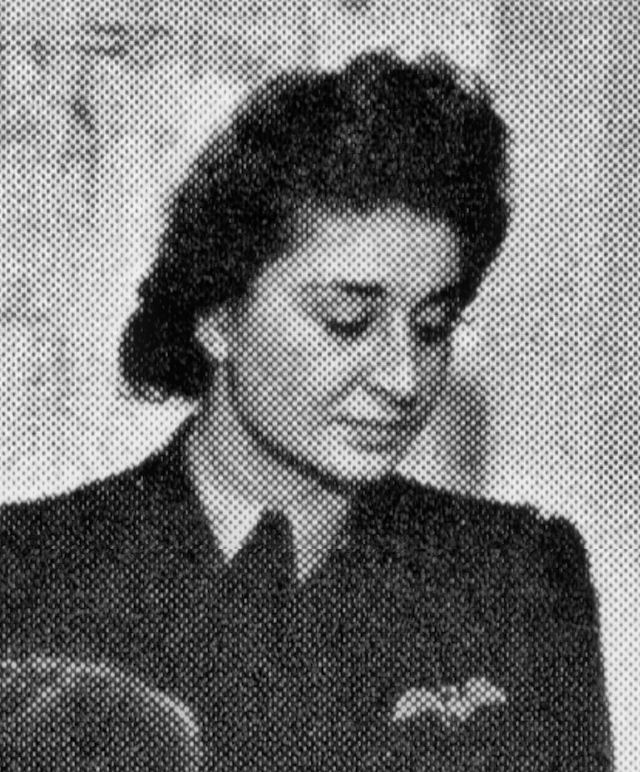
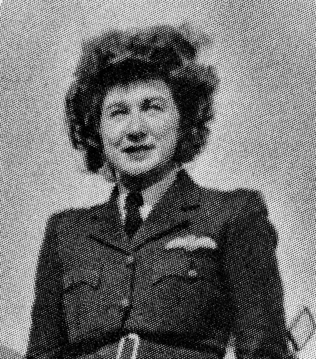

Squadrons met nederlandse piloten:
-
RAF
6, 7, 10, 15, 18, 24, 33, 41, 48, 57, 59, 60, 64, 81, 90, 91, 92, 101, 103, 106, 115, 118, 124, 126, 127, 129, 131, 132, 139, 140, 149, 153, 156, 157, 159, 167, 172, 180, 181, 182, 206, 207, 218, 219, 222, 224, 226, 228, 233, 234, 235, 238, 247, 254, 256, 275, 281, 282, 297, 320, 321, 322, 464, 488, 500, 502, 511, 541, 547, 582, 602, 608, 610, 611, 612, 613, 622, 640, 661, 1 (ME) ARC, ATA -
FAA
800, 808, 860, 886, 887, 888, 894, 896, 899, 1839, 1840, 1842, 1844, 1847, 1853
Vrouwelijke vliegers in de RAF
-
Schuurman, Emma Mathilde
Shuurman tijdens theorie training in 1942.Shuurman bij het ATAVlieger bij de ATA
-
Veldhuyzen van Zanten, Ida Laura
Wikipedia
Ida Laura Veldhuyzen van Zanten.Vlieger bij de ATA
- Kruis van Verdienste
- Vliegerkruis
- Verzetsherdenkingskruis
- Defence Medal (Engeland)
Download voor Excel
Open Excel, Navigeer naar "Gegevens->Uit tekst/CSV" en open het gedownloade bestand. Selecteer bij "Oorspronkelijk
bestand", "65001: Unicode (UTF-8)" en klik op "Laden".
Download JSON
Lijst van Nederlandse vliegers bij de RAF en de FAA.
Bron: Defensie| Achternaam | Voorna(a)m(en) | Geboortedatum | Geboorteplaats | Functie | KM-deel | Operat. | RAF-sqn | FAA-Sqn | Herkomst |
|---|---|---|---|---|---|---|---|---|---|
| Aalpoel | Gerrit Hendrik | 22 augustus 1914 | Deventer | vlieger | KL | ja | 118, 167 | nvt | NL mei 1940 |
| Aarts | Bernardus Maria | 1 februari 1913 | Eersel | vlieger | KL | nee | nvt | nvt | NL mei 1940 |
| Aartsen | Teddy | 20 juni 1925 | Probolinggo | boordschutter | KM | ja | 320 | nvt | NO-Indië |
| Abitol | Maurice Raphael | 9 mei 1923 | Tanger, Marokko | vliegtuigtelegrafist | KL | nee | nvt | nvt | Rekrutering |
| Adelsberg | Joost Henri van | 7 november 1924 | Soerabaja | leerling-vlieger | KL | nee | nvt | nvt | Rekrutering |
| Adriaans | Johan Wilhelm | 27 mei 1903 | Haarlem | vlieger-waarnemer | KM | ja | 320 | nvt | NL mei 1940 |
| Aertsen | Servaas Klaas | 26 januari 1922 | Zundert | vlieger | KL | ja | 322 | nvt | Engelandvaarder |
| Akker | Louis van den | 10 april 1917 | Venlo | vlieger-waarnemer | KL | ja | 320 | nvt | NL mei 1940 |
| Akkers | Heinrich Gerardus Antonius | 17 september 1909 | Haarlem | vlieger | KM | ja | 320 | nvt | NL mei 1940 |
| Almekinders | Gilles | 9 maart 1918 | Rilland-Bath | boordschutter | KM | ja | 320 | nvt | West-Indië |
| Alting | Hein Frederik Gerard | 2 februari 1917 | Doetinchem | waarnemer | KL | ja | 320 | nvt | Rekrutering |
| Amsterdam | Andreas Antonius Johannes van | 13 november 1917 | Kortenhoef | vlieger | KL | ja | 320, 139 | nvt | NL mei 1940 |
| Andriesse | Hartog Napoleon | 1 april 1921 | Eindhoven | leerling-vlieger | KL | nee | nvt | nvt | Engelandvaarder |
| Anema | Willem Paul | 5 juli 1913 | Den Haag | waarnemer | KL | ja | 320 | nvt | Rekrutering |
| Anemaet | Hendrik Gerard | 28 februari 1922 | Nijmegen | vliegtuigtelegrafist | KM | ja | 320 | nvt | NO-Indië |
| Antonie | Johannes Hubertus | 25 juni 1917 | Batavia | vliegtuigtelegrafist | KM | ja | 320 | nvt | NO-Indië |
| Apeldoorn | Albert Gerardus | 1 oktober 1920 | Amsterdam | boordschutter | KM | ja | 320 | nvt | NL mei 1940 |
| Aptroot | Gerard | 12 januari 1922 | Amersfoort | vlieger | KL | nee | nvt | nvt | Engelandvaarder |
| Arendsen de Wolff | Willem Goswin Karel | 22 april 1919 | Modjokerto | vlieger | KL | ja | 661 | nvt | Engelandvaarder |
| Arkel | Jan van | 27 augustus 1919 | Buiksloot | vlieger | KL | ja | 41, 167, 322 | nvt | NL mei 1940 |
| Arriëns | Jan Willem | 27 juni 1922 | Malang | waarnemer | KM | ja | 320 | nvt | Rekrutering |
| Arts | Johannes Baptista Christianus Antonius Josephus | 24 maart 1918 | Ginneken | vlieger | KL | ja | 64, 322 | nvt | NL mei 1940 |
| Asch | Gerard Johannus van | 5 oktober 1922 | Soerabaja | leerling-vlieger | KL | nee | nvt | nvt | Engelandvaarder |
| Asperen | Johan Kees van | 15 juli 1921 | Batavia | waarnemer | KM | nee | nvt | nvt | Engelandvaarder |
| Aten | Remmert | 28 augustus 1920 | Koog aan de Zaan | waarnemer | KM | ja | nvt | 860 | Engelandvaarder |
| Aulnis de Bourouill | Ferdinand Folef d' | 14 maart 1913 | Den Haag | vlieger | KM | ja | nvt | 887 | NO-Indië |
| Ausems | Felix René Mari | 29 juli 1920 | Wijk aan Zee | vlieger | KL | nee | nvt | nvt | Engelandvaarder |
| Avenarius | Willem Hendrik | 27 december 1903 | Amsterdam | vlieger | KM | ja | 320 | nvt | NL mei 1940 |
| Averst | Johan Christiaan ter | 24 augustus 1916 | Amsterdam | vlieger | KL | ja | 101, 218 | nvt | NL mei 1940 |
| Badings | Wouter | 5 juni 1914 | Haarlem | waarnemer | KM | ja | 320 | nvt | NO-Indië |
| Bakker | Andries Christiaan | 6 juni 1914 | Vlieland | boordschutter | KM | ja | 320 | nvt | NO-Indië |
| Bakker | Eduard | 28 maart 1909 | Rotterdam | vlieger-waarnemer | KM | ja | 320 | nvt | NL mei 1940 |
| Bakker | Pieter | 20 januari 1920 | Rotterdam | vlieger | KL | ja | 320 | nvt | NL mei 1940 |
| Bakker | Jochem | 13 juli 1923 | Barendrecht | vlieger | KL | ja | 132, 322 | nvt | Koopvaardij |
| Bakker | Freddy | 18 juni 1907 | Vlaardingen | vlieger-waarnemer | KM | nee | nvt | nvt | NL mei 1940 |
| Bakker | Willem | 26 november 1911 | Den Helder | vlieger-waarnemer | KL | ja | 320 | nvt | NL mei 1940 |
| Bamberger | Harry | 5 november 1921 | Amsterdam | vliegtuigtelegrafist | KL | nee | nvt | nvt | Engelandvaarder |
| Bangert | Rudi Rinaldo | 9 oktober 1924 | Bandoeng | boordschutter | KM | ja | 320 | nvt | NO-Indië |
| Bank | Cornelis Jacobus Johannes | 27 augustus 1918 | Breda | vlieger-waarnemer | KL | ja | 320 | nvt | NL mei 1940 |
| Barczinski | Thomas Ludwig | 21 november 1923 | Berlijn, Duitsland | leerling-vlieger | KL | nee | nvt | nvt | Rekrutering |
| Barten | Eduardus Anthonius | 17 januari 1919 | Amsterdam | vlieger | KL | nee | nvt | nvt | Engelandvaarder |
| Bary | Adriaan Jacob | 1 mei 1921 | Zevenaar | vlieger | KL | ja | 132, 322 | nvt | NL mei 1940 |
| Bastiaenen | Cornelis Adrianus | 9 augustus 1919 | Haarlem | vlieger | KL | ja | 320 | nvt | NL mei 1940 |
| Bausch van Bertsbergh | Jan Willem | 15 oktober 1915 | Medan | vlieger | KL | ja | 320 | nvt | Rekrutering |
| Beauchez | Albertus Johannes | 3 juli 1921 | Bandoeng | leerling-vlieger | KM | nee | nvt | nvt | NO-Indië |
| Beek | Ynze Jacob | 15 december 1916 | Amsterdam | vlieger-waarnemer | KL | nee | nvt | nvt | Engelandvaarder |
| Beek | Dirk Jan ter | 1 februari 1915 | Ternate | vlieger | KL | ja | 33 | nvt | Engelandvaarder |
| Beers | Ronald Leopold van | 19 maart 1923 | Batavia | vlieger | KNIL | ja | 322 | nvt | NO-Indië |
| Beezhold | Heinrich Friedrich George | 30 juli 1910 | Amsterdam | vliegtuigtelegrafist | KM | ja | 321 | nvt | NL mei 1940 |
| Bendelac | Albert Abraham | 6 oktober 1918 | Tanger, Marokko | boordschutter | KL | ja | 320 | nvt | Rekrutering |
| Berg | Johan Balthazar van den | 15 november 1918 | Haarlem | vlieger | KM | nee | nvt | nvt | NL mei 1940 |
| Berg | Dicky van den | 18 januari 1920 | Amsterdam | vlieger | KL | nee | nvt | nvt | Engelandvaarder |
| Berg | Gerardus Jacobus Dorotheus van den | 5 juli 1910 | Tilburg | leerling-vlieger | KM | nee | nvt | nvt | Rekrutering |
| Berg | Hendrik Jan van den | 11 maart 1904 | Zaltbommel | waarnemer | KM | ja | 320 | nvt | NL mei 1940 |
| Bergman | Tjaart Eildert | 15 juni 1913 | Amsterdam | vliegtuigtelegrafist | KM | nee | nvt | nvt | Engelandvaarder |
| Bergmans | Gerrit Maurice | 3 januari 1925 | Antwerpen, België | vlieger | KM | nee | nvt | nvt | Rekrutering |
| Berkum | Bernardus Adrianus Antonius van | 6 maart 1918 | Deventer | vlieger-waarnemer | KL | ja | 320 | nvt | NL mei 1940 |
| Bernet | Louis | 29 april 1920 | Soerabaja | vliegtuigtelegrafist | KM | ja | 320 | nvt | NO-Indië |
| Bersée | Johannes Petrus | 25 maart 1920 | Haarlem | boordwerktuigkundige | KM | nee | nvt | nvt | NL mei 1940 |
| Beugeling | Dirk Jan Roelof | 12 maart 1905 | Amsterdam | vlieger-waarnemer | KM | ja | 320 | nvt | NL mei 1940 |
| Beukema | Richard | 1 september 1924 | Alphen a/d Rijn | leerling-vlieger | KL | nee | nvt | nvt | Rekrutering |
| Beukhof | Albertus | 10 januari 1920 | Ede | boordschutter | KM | ja | 320 | nvt | West-Indië |
| Bevelander | Adriaan | 23 mei 1917 | Bandoeng | vlieger-waarnemer | KL | ja | 320 | nvt | NL mei 1940 |
| Biallosterski | Tony Maurits | 16 maart 1923 | Antwerpen, België | vlieger | KL | ja | 322 | nvt | Rekrutering |
| Bielfeldt | Johan Pieter Jurgen | 23 november 1910 | Rotterdam | vlieger | KM | ja | 320 | nvt | NL mei 1940 |
| Bierenbroodspot | Willem | 23 november 1906 | Amsterdam | waarnemer | KM | ja | 320, 254 | nvt | NO-Indië |
| Bierens de Haan | Marinus Adriaan | 16 mei 1917 | Amsterdam | vlieger | KL | ja | 640 | nvt | Rekrutering |
| Biesen Barham | Douglas van der | 11 april 1921 | Londen, Groot-Brittannië | leerling-vlieger | KL | nee | nvt | nvt | Rekrutering |
| Bij | Henri Marie de | 5 september 1913 | Zwolle | vlieger | KL | ja | 640 | nvt | Rekrutering |
| Bijlsma | Willem | 24 augustus 1918 | Rotterdam | boordschutter | KM | ja | 320 | nvt | NO-Indië |
| Birsak | George Gaston Andreas | 16 maart 1910 | Djokjakarta | waarnemer | KM | ja | 320 | nvt | NO-Indië |
| Bloemgarten | Felix Hendrik | 23 mei 1920 | Heerlen | waarnemer | KL | ja | 320 | nvt | Engelandvaarder |
| Blok | Johannes | 14 november 1919 | Batavia | vlieger-waarnemer | KM | ja | nvt | 1847 | NO-Indië |
| Blok | Willem Lodewijk | 30 juni 1913 | Rotterdam | vliegtuigtelegrafist | KM | ja | 320 | nvt | NO-Indië |
| Blom | Pieter Hendrik | 16 januari 1913 | Sappemeer | technisch officier | KM | ja | 297 | nvt | Rekrutering |
| Blom | Jan | 6 september 1912 | Delft | vliegtuigtelegrafist | KM | ja | 320, 321 | nvt | NL mei 1940 |
| Blom | Pierre Jules Victor | 24 juni 1919 | Maastricht | leerling-waarnemer | KM | nee | nvt | nvt | Engelandvaarder |
| Bode | Jan | 30 oktober 1917 | Milingen | boordschutter | KM | ja | 320 | nvt | West-Indië |
| Boeki | Harry | 3 februari 1925 | Rotterdam | vliegtuigtelegrafist | KL | nee | nvt | nvt | Rekrutering |
| Boelhouwer | Marius | 18 oktober 1919 | Giessendam | vliegtuigtelegrafist | KM | ja | nvt | 860 | NL mei 1940 |
| Boer | Gerardus Johannes de | 25 maart 1921 | Amsterdam | leerling-vlieger | KL | nee | nvt | nvt | NL mei 1940 |
| Boer | Richard de | 1 november 1915 | Scheveningen | vlieger-waarnemer | KM | ja | 320 | nvt | NL mei 1940 |
| Boer | Aloysius Cornelis den | 25 november 1918 | Breda | vlieger | KL | ja | 320 | nvt | NL mei 1940 |
| Bogaert | Eduard Alexander Otto van den | 15 september 1920 | Soerabaja | vlieger | KM | nee | nvt | nvt | Rekrutering |
| Bolk | Marinus | 2 september 1913 | Rotterdam | vliegtuigtelegrafist | KM | ja | 320 | nvt | NL mei 1940 |
| Bolleurs | Henri Antoine | 30 augustus 1918 | Dordrecht | vliegtuigtelegrafist | KM | ja | 320 | nvt | NO-Indië |
| Bolte | Johan Berend | 19 oktober 1916 | Amsterdam | boordschutter | KM | ja | 320 | nvt | NL mei 1940 |
| Bom | Cornelis Antonius | 3 maart 1921 | Breda | vlieger | KL | nee | nvt | nvt | Engelandvaarder |
| Bom | Antoon | 17 augustus 1918 | Amsterdam | boordschutter | KM | ja | 320 | nvt | West-Indië |
| Bongaerts | Joseph Marie Philippe | 17 maart 1915 | Venlo | vlieger | KL | ja | 320 | nvt | NL mei 1940 |
| Booleman | Roland Otto Bernard | 11 december 1915 | Amsterdam | vlieger | KM | nee | nvt | nvt | Rekrutering |
| Boom | Jacob | 19 augustus 1916 | Amsterdam | vliegtuigtelegrafist en waarnemer | KM | ja | 320 | nvt | NL mei 1940 |
| Boom | Johannes Isaac | 22 juli 1920 | Curaçao | waarnemer | KM | ja | 320 | nvt | Rekrutering |
| Boon von Ochssée | Jan Gijsbert | 25 juli 1921 | Djokjakarta | vlieger-waarnemer | KM | ja | nvt | 1847, 1840, 1839 | NO-Indië |
| Boots | Henri Jean | 20 mei 1918 | Maastricht | vlieger-waarnemer | KL | ja | 320 | nvt | NL mei 1940 |
| Bootsma | Johannes | 7 februari 1919 | Den Haag | waarnemer | KL | ja | 320 | nvt | NL mei 1940 |
| Borgerhoff Mulder | René Luois Gilbert | 20 september 1913 | Oegstgeest | vlieger-waarnemer | KM | ja | 320 | nvt | Engelandvaarder |
| Born | Dirk Herman Jacob | 23 augustus 1916 | Utrecht | boordschutter | KM | ja | 320 | nvt | NL mei 1940 |
| Born | Mark Theodorus | 20 mei 1922 | Amsterdam | leerling-vlieger | KL | nee | nvt | nvt | NL mei 1940 |
| Borst | Cornelis de | 7 januari 1909 | Den Haag | vlieger | KM | ja | 320 | nvt | NL mei 1940 |
| Bos | Franciscus Johannes Joseph Maria ten | 23 mei 1904 | Almelo | vlieger-waarnemer | KM | ja | 320 | nvt | NL mei 1940 |
| Bos | Pieter | 13 februari 1921 | Weesp | vlieger | KL | nee | nvt | nvt | NL mei 1940 |
| Bos | Barend van den | 5 november 1913 | Almelo | leerling-vlieger | KM | nee | nvt | nvt | NL mei 1940 |
| Bosch | Willem Marius van den | 1 maart 1915 | Zeist | vlieger | KL | ja | nvt | 808 | NL mei 1940 |
| Boschman | Jacques Henri | 27 mei 1923 | Djatiroto | vliegtuigtelegrafist | KM | nee | nvt | nvt | Engelandvaarder |
| Boswinkel | Jan Pieter | 12 november 1918 | Lekkerkerk | vlieger-waarnemer | KM | ja | nvt | 860 | NO-Indië |
| Both | John Hendrik Christiaan | 18 oktober 1921 | Tjepoe | nvt | KL | nee | nvt | nvt | Rekrutering |
| Bouma | Folkert | 8 juni 1921 | St. Jacobiparochie | vlieger | KL | ja | 320 | nvt | NL mei 1940 |
| Bouwman | Diedricus Henricus | 4 juli 1921 | Heerlen | vliegtuigtelegrafist | KL | ja | 320 | nvt | Rekrutering |
| Bouwman | Walter Gustaaf Leonie | 8 september 1924 | Maastricht | vliegtuigtelegrafist | KL | ja | 320 | nvt | Rekrutering |
| Boxtel | Pierre Johannes van | 26 januari 1921 | Loon op Zand | vlieger | KL | nee | nvt | nvt | Koopvaardij |
| Braak | Frederik ter | 29 april 1920 | Hengelo | vlieger-waarnemer | KL | ja | 320 | nvt | NL mei 1940 |
| Bracht | Lambert André | 19 juni 1923 | Tjimahi | vliegtuigtelegrafist | KM | ja | 320 | 860 | NO-Indië |
| Brand | Daniël | 7 februari 1917 | Zeist | vlieger | KL | ja | 320 | nvt | NL mei 1940 |
| Brandon | Willem Frederik | 17 oktober 1924 | Singopore | boordschutter | KM | ja | 320 | nvt | NO-Indië |
| Bree | Karel Arnold La | 9 juli 1916 | Djombang | vlieger-waarnemer | KM | ja | nvt | 1847, 1840 | NO-Indië |
| Breedveld | Jack Frederik | 24 september 1910 | Bindjei | vlieger-waarnemer | KM | ja | 320 | nvt | Rekrutering |
| Bretonière | Louis Leonard de la | 8 juni 1916 | Tasik Malaja | vlieger | KL | ja | 322 | nvt | Engelandvaarder |
| Brilleslijper | Jonas | 10 januari 1923 | Antwerpen, België | boordschutter | KM | nee | nvt | nvt | Engelandvaarder |
| Brink | Marinus Leonardus van den | 5 januari 1923 | Den Haag | vlieger | KL | nee | nvt | nvt | Engelandvaarder |
| Broek | Arnold Lambert Marie van den | 17 september 1911 | Oirschot | vlieger-waarnemer | KL | ja | 320 | nvt | NL mei 1940 |
| Broekhoven | Adrianus Johannes | 16 maart 1917 | Roosendaal | boordschutter | KM | ja | 320 | nvt | Overig |
| Broekman | Robert | 13 september 1925 | Amsterdam | boordschutter | KM | ja | 320 | nvt | Engelandvaarder |
| Brogtrop | Franciscus Cornelis Marie | 13 februari 1919 | Breda | vlieger-waarnemer | KNIL | ja | nvt | 1847 | NO-Indië |
| Bron | Rudi van den | 28 november 1925 | Soerabaja | leerling-boordschutter | KM | nee | nvt | nvt | NO-Indië |
| Brouwer | Koenraad | 5 februari 1917 | Den Helder | boordschutter | KM | nee | nvt | nvt | NL mei 1940 |
| Brouwers | Jacobus Antonius Franciscus | 28 september 1923 | Den Haag | boordschutter | KM | ja | 320 | nvt | Engelandvaarder |
| Bruens | Gerard Theodoor | 27 maart 1917 | Westervoort | vlieger-waarnemer | KM | ja | 320, 321 | nvt | NL mei 1940 |
| Brugman | Johan | 22 augustus 1910 | Amsterdam | vlieger | KM | ja | 320 | nvt | NL mei 1940 |
| Bruijn | Johannes Gerrit de | 3 mei 1917 | Waddinxveen | vliegtuigtelegrafist | KM | ja | 320 | 860 | NO-Indië |
| Bruijn | Antonius de | 13 augustus 1920 | Den Helder | vliegtuigtelegrafist | KM | ja | 320 | nvt | NL mei 1940 |
| Bruijne | Gerardus | 15 september 1918 | Gouda | leerling-vlieger | KL | nee | nvt | nvt | Engelandvaarder |
| Bruinier | Jan Berend Hendrik | 9 oktober 1913 | Batavia | vlieger-waarnemer | KNIL | ja | 92, 611 | nvt | NO-Indië |
| Bruyn Kops | Johan Willem de | 10 juli 1922 | Batavia | vlieger | KL | ja | 320 | nvt | Engelandvaarder |
| Buijs | Theodorus Franciscus André | 7 december 1913 | Den Haag | vlieger-waarnemer | KNIL | ja | 92, 611 | nvt | NO-Indië |
| Buijtendijk | George Jacobus Johannes | 10 juni 1916 | Tilburg | leerling-vlieger | KL | nee | nvt | nvt | Engelandvaarder |
| Buiskool | Albert Johannes | 12 mei 1918 | Winschoten | leerling-vlieger | KL | nee | nvt | nvt | Engelandvaarder |
| Buiskool | Henry Francis | 9 augustus 1920 | Soerabaja | vlieger-waarnemer | KNIL | ja | 129 | nvt | NO-Indië |
| Bukkens | Joseph | 8 juni 1916 | Vlissingen | waarnemer | KL | ja | 320 | nvt | NL mei 1940 |
| Buning | Johannes Jacobus | 12 november 1923 | Amsterdam | vlieger | KM | ja | 90 | nvt | NO-Indië |
| Burg | Lodewijk van den | 4 augustus 1914 | Utrecht | vlieger | KM | ja | 320 | nvt | Rekrutering |
| Burgerhout | Hugo Victor Benjamin | 21 mei 1913 | Rotterdam | vlieger-waarnemer | KM | ja | 320 | nvt | NO-Indië |
| Burgwal | Rudolph Frans | 27 september 1917 | Soerabaja | vlieger | KL | ja | 322 | nvt | Engelandvaarder |
| But | Johannes | 21 februari 1916 | Oost- en West Souburg | vliegtuigtelegrafist | KM | ja | 320 | nvt | NL mei 1940 |
| Butner | Constant | 31 juli 1914 | Teteringen | vlieger | KM | nee | nvt | nvt | Rekrutering |
| Buynink | Pieter | 22 juni 1911 | Maassluis | vlieger | KM | ja | 320 | nvt | NL mei 1940 |
| Bührs | Johannes Gerardus | 9 mei 1912 | Zaandam | leerling-vlieger | KL | nee | nvt | nvt | Rekrutering |
| Camps | Marius Emile Henricus | 25 januari 1921 | Heerlen | waarnemer | KL | nee | nvt | nvt | Engelandvaarder |
| Carpentier Alting | Johannes Hendrik | 31 juli 1923 | Tegal | waarnemer | KM | ja | nvt | 860 | NO-Indië |
| Celliée Muller | Jacobus du | 20 december 1920 | Amsterdam | leerling-vlieger | KM | nee | nvt | nvt | Rekrutering |
| Challik | Dirk Theodoor | 30 december 1920 | Bandoeng | vlieger | KM | ja | nvt | 899, 887 | NO-Indië |
| Chateau | Eddy Herman | 11 juli 1915 | Paramaribo, Suriname | vliegtuigtelegrafist | KM | ja | 320 | nvt | Koopvaardij |
| Cijsouw | Pieter | 7 juli 1911 | Westkapelle | vliegtuigtelegrafist | KM | ja | 321 | nvt | NL mei 1940 |
| Citroen | Abraham | 27 mei 1925 | Amsterdam | vliegtuigtelegrafist | KL | ja | 320 | nvt | Engelandvaarder |
| Citroen | Joseph | 30 maart 1921 | Amsterdam | vliegtuigtelegrafist | KL | ja | 320 | nvt | Engelandvaarder |
| Claassen | Gerard | 17 november 1919 | Nijmegen | waarnemer | KL | ja | 320 | nvt | Rekrutering |
| Clay | Jolle Maurits Pieter | 26 juni 1911 | Delft | waarnemer | KM | ja | 320 | nvt | NL mei 1940 |
| Clijnk | Johannes | 24 juni 1917 | Purmerend | vlieger | KL | ja | 320 | nvt | NL mei 1940 |
| Cloesmeijer | Jopy Henky | 16 januari 1916 | Toeban | vliegtuigtelegrafist | KM | ja | 320 | nvt | NO-Indië |
| Coebergh van den Braak | Joseph Wilhelmus | 6 april 1917 | Den Haag | boordschutter | KL | ja | 320 | nvt | Engelandvaarder |
| Coevorden | Louis van | 3 april 1919 | Den Haag | waarnemer | KL | nee | nvt | nvt | Engelandvaarder |
| Cohen | Robbert Simon | 24 juli 1922 | Rotterdam | vlieger | KL | ja | 613 | nvt | Engelandvaarder |
| Cohen Stuart | Arnold James | 28 juli 1910 | Londen, Groot-Brittannië | vlieger | RAF | ja | 18 | nvt | Rekrutering |
| Collée | Johannes Marinus Adolph | 9 mei 1918 | Rijnsburg | vlieger-waarnemer | KL | ja | 320 | nvt | Engelandvaarder |
| Commer | Benjamin Bernard | 23 juli 1921 | Amsterdam | vliegtuigtelegrafist | KM | nee | nvt | nvt | Engelandvaarder |
| Corporaal | Bernard | 15 oktober 1921 | Bandoeng | vliegtuigtelegrafist | KM | nee | nvt | nvt | NO-Indië |
| Costa | Henry Bernard La | 12 augustus 1922 | Rio de Janeiro, Brazilie | vlieger-waarnemer | KL | ja | 320, 281, 282, 547 | nvt | Rekrutering |
| Cramerus | Pieter Adriaan | 16 juli 1916 | Tebing Tingi | vlieger-waarnemer | KNIL | ja | 322 | nvt | NO-Indië |
| Cramm | Hendrik Charles | 17 februari 1918 | Hilversum | vlieger | KL | ja | 322 | nvt | NL mei 1940 |
| Daalen Wetters | Rudolf Frederik van | 25 januari 1915 | Geneng | vlieger | KL | ja | 131, 322 | nvt | Engelandvaarder |
| Daanen | Hermanus Jan Hendrik | 21 december 1916 | Vlissingen | vlieger-waarnemer | KNIL | nee | nvt | nvt | NO-Indië |
| Dam | Joseph van | 30 oktober 1921 | Haarlem | waarnemer | KL | nee | nvt | nvt | Engelandvaarder |
| Dam | Anton Gerhard van | 1 november 1923 | Malang | vliegtuigtelegrafist | KM | ja | nvt | 860 | NO-Indië |
| Dam | Dirk van | 16 maart 1924 | Hilversum | waarnemer | KL | nee | nvt | nvt | Engelandvaarder |
| Dam | Petrus Johannes Epiphanius van | 6 januari 1922 | Venlo | boordschutter | KM | ja | 320 | nvt | Engelandvaarder |
| Dam Merrett | George Albert van | 8 november 1916 | Amsterdam | boordschutter | KM | ja | 320 | nvt | Engelandvaarder |
| Daniëls | Edgar Ephraiem | 6 december 1913 | Antwerpen, België | waarnemer | KL | nee | nvt | nvt | Engelandvaarder |
| Daniëls | Antonius Johannes | 4 november 1902 | Arnhem | vlieger | KM | ja | 320, 24 | nvt | NL mei 1940 |
| Deen | Klaas | 21 juli 1916 | Groningen | waarnemer | KM | ja | 320 | nvt | NL mei 1940 |
| Dekker | Jan Willem | 9 september 1913 | Zaandam | vlieger | KL | ja | 64, 322 | nvt | Rekrutering |
| Dekker | Louis | 28 maart 1923 | Rotterdam | boordschutter | KM | ja | 320 | nvt | Rekrutering |
| Dekkers | Zeger Willem Casper | 7 augustus 1916 | Rotterdam | vlieger | KM | nee | nvt | nvt | NL mei 1940 |
| Delhaye | Johannes Andreas Antoine | 24 augustus 1923 | Batavia | vliegtuigtelegrafist | KM | nee | nvt | nvt | NO-Indië |
| Dien | Dick van | 13 april 1913 | Paramaribo, Suriname | vlieger | KL | nee | nvt | nvt | Engelandvaarder |
| Dieren Bijvoet | Anthonius Johannes van | 1 september 1919 | Utrecht | vlieger | KL | ja | 320 | nvt | NL mei 1940 |
| Diets | Armand Lodewijk | 3 juni 1923 | Makassar | vliegtuigtelegrafist | KM | ja | 320 | nvt | NO-Indië |
| Dijk | Dirk van | 29 juni 1916 | Rotterdam | vlieger | KL | ja | 320 | nvt | NL mei 1940 |
| Dijk | Thomas van | 17 april 1918 | Malang | vliegtuigtelegrafist | KM | ja | 320 | nvt | NO-Indië |
| Dijken | Jan van | 29 juni 1917 | Amsterdam | vlieger-waarnemer | KL | ja | 320 | nvt | NL mei 1940 |
| Dijkman | Gerardus Johannes Hendrikus | 4 september 1921 | Deventer | vlieger | KNIL | ja | 322 | nvt | NO-Indië |
| Dijkstra | Jan Griethardus | 3 juni 1913 | Nieuwolda | vlieger | KL | ja | 233 | nvt | Rekrutering |
| Dilweg | Gerrit Alexander | 29 mei 1909 | Deventer | waarnemer | KM | ja | 320 | nvt | NL mei 1940 |
| Ditmar | Willem Nicolaas Jozua van | 22 september 1917 | Rotterdam | waarnemer | KL | ja | 464 | nvt | Engelandvaarder |
| Ditmarsch | Eric | 27 november 1922 | Semarang | vlieger | KM | ja | 322 | nvt | NO-Indië |
| Dobbe | Abraham Adrianus | 13 januari 1922 | Hoorn | waarnemer | KL | nee | nvt | nvt | Engelandvaarder |
| Dobson | William Castor | 22 maart 1915 | Tjilatjap | vlieger-waarnemer | KM | ja | 320 | nvt | NO-Indië |
| Does | Cornelis Pieter Johannes Maria van der | 15 mei 1920 | IJmuiden | boordschutter | KM | ja | 320 | nvt | Engelandvaarder |
| Doesburg | Adriaan Gerrit Cornelis van | 8 mei 1920 | Sanvic, Frankrijk | leerling-waarnemer | KL | nee | nvt | nvt | Rekrutering |
| Doest | Johannes Franciscus ter | 9 september 1925 | Hengelo | vlieger | KL | nee | nvt | nvt | Engelandvaarder |
| Dolman | Jan Dirk | 12 juni 1911 | Beusichem | vlieger-waarnemer | KM | ja | 320 | nvt | NL mei 1940 |
| Donath | Johan Hendrik | 16 juli 1920 | Amersfoort | waarnemer | KL | ja | 320 | nvt | NL mei 1940 |
| Dongen | Claudius Antoon Dick van | 19 september 1923 | Semarang | vlieger | KM | ja | nvt | 1840 | NO-Indië |
| Doornbos | Hendrik Jan | 5 april 1912 | Doetinchem | vlieger | KL | ja | 322 | nvt | Engelandvaarder |
| Drenth | Willem Harmannus Philippus | 5 mei 1899 | Appingedam | waarnemer | KM | ja | 320 | nvt | NL mei 1940 |
| Driel | Johannes van | 10 januari 1924 | Den Haag | boordschutter | KM | ja | 320 | nvt | Engelandvaarder |
| Drost | Robert | 30 juni 1893 | Richmond, Engeland | vlieger | KM | nee | nvt | nvt | Rekrutering |
| Duijkers | Henri Albert Carl | 4 april 1923 | Soerabaja | vliegtuigtelegrafist | KM | ja | 320 | nvt | NO-Indië |
| Duijzings | Arno Willem Constant | 5 oktober 1915 | Utrecht | waarnemer | KM | ja | 320 | nvt | NL mei 1940 |
| Duis | Gerrit Jan ten | 3 juli 1915 | Goor | vlieger | KL | ja | 238, 149 | nvt | Rekrutering |
| Dun | Antoon Josep van | 9 augustus 1920 | Helvoirt | vlieger | KM | nee | nvt | nvt | NL mei 1940 |
| Dwinger | Marcus | 16 maart 1922 | Leeuwarden | vlieger | KL | nee | nvt | nvt | Engelandvaarder |
| Eden | Albert van | 23 februari 1922 | Haarlem | vliegtuigtelegrafist | KM | nee | nvt | nvt | Engelandvaarder |
| Eeghen | Jan Jacob van | 25 september 1918 | Amsterdam | vlieger | KL | nee | nvt | nvt | Engelandvaarder |
| Eekhof | Johan Otto | 5 december 1917 | Malang | waarnemer | KM | ja | nvt | 860 | NO-Indië |
| Egmond | Arie Willem van | 4 juli 1921 | Batavia | leerling-boordschutter | KM | nee | nvt | nvt | NL mei 1940 |
| Egter van Wissekerke | Jan George | 4 juni 1923 | Situbondo | vliegtuigtelegrafist | KM | ja | 320 | nvt | NO-Indië |
| Eijk | Frans Johan Hubert van | 19 november 1918 | Gouda | vlieger | KL | ja | 322 | nvt | NL mei 1940 |
| Eikhof | Petrus Nicolaas van den | 3 oktober 1922 | Bandoeng | waarnemer | KM | nee | nvt | nvt | NO-Indië |
| Eind | Evert van 't | 11 juli 1920 | Amsterdam | vlieger | KL | ja | 320 | nvt | NL mei 1940 |
| Elias | Jhr Pieter Jacob | 8 maart 1909 | Hilversum | vlieger-waarnemer | KM | ja | 320 | nvt | NL mei 1940 |
| Emden | Johan Henri van | 22 maart 1909 | Commewijne, Suriname | vlieger-waarnemer | KM | ja | 320 | nvt | NO-Indië |
| Emmens | Hiddo Lukas | 13 februari 1917 | Appingedam | boordschutter | KM | ja | 320 | nvt | West-Indië |
| Emmens | Geert | 21 maart 1918 | Delfzijl | vlieger-waarnemer | KL | ja | 320 | nvt | NL mei 1940 |
| Emous | Thijs Martinus | 5 juli 1915 | Amsterdam | waarnemer | KM | ja | 320 | nvt | NO-Indië |
| Engels | Petrus | 24 april 1921 | Nijmegen | vliegtuigtelegrafist | KM | ja | 320 | nvt | NO-Indië |
| Engelsma | Markus | 7 mei 1918 | Rotterdam | boordschutter | KM | ja | 320 | nvt | NL mei 1940 |
| Erwteman | Jacques | 3 juni 1911 | Amsterdam | waarnemer | KL | ja | 320 | nvt | Engelandvaarder |
| Eupen | Robert van | 9 december 1922 | Batavia | vlieger | KL | ja | 15 | nvt | Rekrutering |
| Evers | Jacob | 14 november 1919 | Rotterdam | vlieger-waarnemer | KM | ja | nvt | 860 | NO-Indië |
| Exter | Robert Piet van | 2 september 1922 | Shanghai, China | vliegtuigtelegrafist | KL | nee | nvt | nvt | Engelandvaarder |
| Faas | Antonius Everhardus | 16 september 1918 | Kampen | boordschutter | KM | ja | 320 | nvt | West-Indië |
| Feij | Johannes Nicolaas | 11 januari 1923 | Amsterdam | waarnemer | KM | ja | nvt | 860 | Engelandvaarder |
| Ferwerda | Eelco Wicher | 2 juli 1920 | Amsterdam | vlieger | KL | ja | 602 | nvt | Rekrutering |
| Flinterman | Johannes Leonardus | 2 oktober 1919 | Den Haag | vlieger | KL | ja | 222, 322, 126 | nvt | NL mei 1940 |
| Fransen | Johannes Marianus Adriaan David | 14 januari 1923 | Semarang | vliegtuigtelegrafist | KM | ja | 320 | nvt | NO-Indië |
| Frerichs | Anton | 6 april 1917 | Amsterdam | vlieger | KL | nee | nvt | nvt | NL mei 1940 |
| Fritz | Louis Johan | 23 oktober 1902 | Den Helder | vlieger-waarnemer | KM | ja | nvt | 860 | NO-Indië |
| Frowein | Jan Pieter | 3 december 1919 | Heemstede | vlieger-waarnemer | KL | ja | 320 | nvt | NL mei 1940 |
| Fuchter | Johan Hendrik Caspard | 16 april 1921 | Buitenzorg | waarnemer | KL | nee | nvt | nvt | Engelandvaarder |
| Gabeler | Constantijn Nicolaas | 13 september 1923 | Blora | vliegtuigtelegrafist | KM | ja | 320 | nvt | NO-Indië |
| Gabriël | Rudolf Eduard | 30 november 1923 | Poerwokerto | vliegtuigtelegrafist | KM | ja | 320 | nvt | NO-Indië |
| Ganderheijden | Bastiaan Wijnand | 8 januari 1924 | Rotterdam | waarnemer | KL | nee | nvt | nvt | Engelandvaarder |
| Ganderheijden | Pieter Lambertus | 3 april 1917 | Rotterdam | vliegtuigtelegrafist | KL | nee | nvt | nvt | Engelandvaarder |
| Gans | Hans Frederik | 8 november 1920 | Borken, Duitsland | waarnemer | KL | ja | 320 | nvt | Rekrutering |
| Garnade | Harry Tony | 16 augustus 1915 | Batavia | vlieger | KL | ja | 140 | nvt | Rekrutering |
| Gart | Jacobus Johannes | 14 oktober 1916 | Amsterdam | vlieger-waarnemer | KL | ja | 320 | nvt | NL mei 1940 |
| Gast | Tonnis Jakob | 25 oktober 1919 | Assen | vliegtuigtelegrafist | KM | ja | 320 | nvt | NL mei 1940 |
| Geerlofs | Max Adrianus | 17 april 1923 | Simaloer | boordschutter | KM | ja | 320 | nvt | NO-Indië |
| Gelder | Louis van | 5 februari 1921 | Brussel, België | vlieger | KL | nee | nvt | nvt | Engelandvaarder |
| Gelderen | Maarten Kornelis van | 2 april 1917 | Rotterdam | boordschutter | KM | ja | 320 | nvt | NL mei 1940 |
| Gentis | Diedrich Hendrik | 4 juli 1915 | Hilversum | vlieger-waarnemer | KM | ja | nvt | 860 | NO-Indië |
| Geraets | Herman Antonius Ignatius | 18 september 1915 | Amsterdam | vliegtuigtelegrafist | KM | ja | 320 | nvt | NO-Indië |
| Geschiere | Adriaan Eduard Maria | 1 april 1910 | Bergen op Zoom | waarnemer | KM | ja | nvt | 860 | NL mei 1940 |
| Gesterkamp | Rudolph Marie | 17 augustus 1922 | Semarang | leerling-vlieger | KM | nee | nvt | nvt | NO-Indië |
| Glerum | Herman Wilhelm | 28 augustus 1911 | Amsterdam | vlieger | KL | nee | nvt | nvt | Rekrutering |
| Goemans | Cornelis Jacobus Maria | 6 november 1918 | Hillegom | vlieger | KL | ja | 640 | nvt | Rekrutering |
| Goens | Rijklof van | 25 juli 1914 | Bandoeng | vlieger | KL | ja | 41 | nvt | Engelandvaarder |
| Gombert | Derk Mathijs | 27 december 1913 | Appingedam | vlieger-waarnemer | KL | ja | 320 | nvt | NL mei 1940 |
| Gorkum | Hendricus Jacobus van | 19 juni 1911 | Rotterdam | boordschutter | KM | ja | 320 | nvt | NL mei 1940 |
| Gorter | William | 26 juli 1922 | Batavia | vliegtuigtelegrafist | KM | ja | 320 | nvt | NO-Indië |
| Goudeketting | Maurits | 6 augustus 1920 | Velsen | boordschutter | KM | ja | 320 | nvt | Engelandvaarder |
| Govaars | Eric Donald | 14 januari 1921 | Soerabaja | vlieger-waarnemer | KNIL | ja | nvt | 887 | NO-Indië |
| Graaf | Johannes Willem Frederik de | 17 december 1918 | Rotterdam | vlieger | KL | nee | nvt | nvt | Rekrutering |
| Graaff | Cornelis Johannes van der | 6 november 1903 | Den Haag | vlieger-waarnemer | KM | ja | 320 | nvt | NL mei 1940 |
| Grader | Jan | 23 augustus 1909 | Amsterdam | vlieger-waarnemer | KM | ja | 320 | nvt | NO-Indië |
| Greve | Gerardus Hendricus | 22 juli 1923 | Rotterdam | vlieger-waarnemer | KNIL | ja | nvt | 1847, 1840, 800 | NO-Indië |
| Griend | Petrus Johannes van der | 15 januari 1893 | Jaarsveld | vlieginstructeur | KL | nee | nvt | nvt | NL mei 1940 |
| Griffioen | Maarten | 16 november 1921 | Kampen | vlieger | KL | nee | nvt | nvt | Engelandvaarder |
| Groen | Alfred Martin | 29 maart 1919 | Amsterdam | leerling-vlieger | KL | nee | nvt | nvt | Engelandvaarder |
| Groeneveld | Rudi | 13 augustus 1920 | Bandoeng | vlieger-waarnemer | KNIL | ja | 322 | nvt | NO-Indië |
| Groot | Max de | 20 december 1926 | Waterberg, Zuid-Afrika | vlieger | KL | nee | nvt | nvt | Rekrutering |
| Groot | Gijsbertus Hermanus de | 10 mei 1918 | Rijswijk | vlieger-waarnemer | KM | ja | 320 | nvt | NO-Indië |
| Groot | Wildrik de | 1 oktober 1918 | Emmen | vlieger-waarnemer | KM | ja | 320 | nvt | NL mei 1940 |
| Groot | Adriaan Willem Jacob de | 14 mei 1904 | Alkmaar | vlieger | KM | ja | 320 | nvt | NL mei 1940 |
| Groot | Frans de | 26 maart 1918 | Rotterdam | vlieger | KL | nee | nvt | nvt | Engelandvaarder |
| Groot | Joannes Christianus de | 24 februari 1912 | Amsterdam | waarnemer | KL | ja | 320 | nvt | Rekrutering |
| Groot | Adrianus Johannes de | 29 maart 1920 | Den Haag | vliegtuigtelegrafist | KM | nee | nvt | nvt | Engelandvaarder |
| Grootens | Alfred Fredericus | 6 mei 1922 | Tjiandjoer | vlieger-waarnemer | KM | nee | nvt | nvt | NO-Indië |
| Grooth | Wolter Klaas Eduard Carolinus de | 27 februari 1914 | Rotterdam | leerling-vlieger | KL | nee | nvt | nvt | Rekrutering |
| Gruter | Theodorus Johannes Maria | 1 augustus 1920 | Hilversum | waarnemer | KL | ja | 320 | nvt | Engelandvaarder |
| Guillaume | Louis Max | 3 oktober 1919 | Etterbeek-Brusssel, België | leerling-vlieger | KL | nee | nvt | nvt | NL mei 1940 |
| Guilonard | Nicodême | 29 juni 1904 | Brielle | vlieger | KM | ja | 206 | nvt | NO-Indië |
| Gutteling | Christiaan | 8 april 1920 | Buitenzorg | waarnemer | KM | ja | nvt | 860 | Engelandvaarder |
| Guyt | Henri Willem | 18 februari 1914 | Den Haag | vlieger | KL | ja | 608 | nvt | Engelandvaarder |
| Haaften | Herman Gerard van | 28 september 1908 | Den Haag | vliegtuigtelegrafist | KM | ja | 320 | nvt | NO-Indië |
| Haan | Hilmar Johannes de | 9 november 1920 | Alblasserdam | vlieger | KL | nee | nvt | nvt | Engelandvaarder |
| Haan | Albertus Jacobus de | 22 september 1917 | Sloten | vliegtuigtelegrafist | KM | ja | 320 | nvt | NO-Indië |
| Haan | Pieter de | 17 maart 1922 | Leeuwarden | vliegtuigtelegrafist | KM | ja | 320 | nvt | NO-Indië |
| Haeften | Willem Constantijn van | 4 oktober 1916 | Nijmegen/Hees | waarnemer | KM | ja | 320 | nvt | NO-Indië |
| Haers | Augustinus Cornelis | 23 februari 1921 | Philippine | vlieger | KL | ja | 320 | nvt | Rekrutering |
| Hagemeijer | Dirk Marie | 20 mei 1912 | Soerabaja | waarnemer | KL | ja | 320 | nvt | Engelandvaarder |
| Hagen | Johannes Hermanus van | 12 december 1916 | Breda | boordschutter | KM | ja | 320 | nvt | NO-Indië |
| Hagens | Leonardus | 16 mei 1920 | Arnhem | leerling-vlieger | KL | nee | nvt | nvt | NL mei 1940 |
| Halkema | Carl Gerard | 28 september 1920 | Bandjermasin | waarnemer | KM | nee | nvt | nvt | NO-Indië |
| Hamel | Jacob Willem van | 4 november 1920 | Den Haag | vlieger | KL | ja | 167, 322 | nvt | Engelandvaarder |
| Hamelink | Adriaan | 17 maart 1917 | Goes | vliegtuigtelegrafist | KM | ja | 320 | nvt | NO-Indië |
| Hamers | Anthonius Gerardus | 23 april 1922 | Amsterdam | vlieger | KL | nee | nvt | nvt | Engelandvaarder |
| Hamminga | Willem | 11 januari 1922 | Losser | vlieger | KM | ja | nvt | onbek. | Engelandvaarder |
| Hanneman | François George | 3 juli 1917 | Amsterdam | vlieger | KL | nee | nvt | nvt | NL mei 1940 |
| Harmelen | Jacobus Hendrik van | 18 december 1916 | Den Haag | leerling-vlieger | KL | nee | nvt | nvt | Rekrutering |
| Harms | Johannes Hendrikus | 17 november 1920 | Semarang | vlieger-waarnemer | KNIL | ja | 322 | nvt | NO-Indië |
| Harselaar | Ernst Cornelis van | 22 juli 1921 | Amsterdam | boordschutter | KM | ja | 320 | nvt | NL mei 1940 |
| Harsevoort | Hendrik | 24 juni 1918 | Assen | boordschutter | KM | ja | 320 | nvt | Engelandvaarder |
| Harst | Edward Arnold van der | 3 november 1918 | Singapore, Maleisië | vlieger | KL | nee | nvt | nvt | Engelandvaarder |
| Hart | Jacob 't | 19 juli 1921 | Den Haag | vlieger | KL | ja | 103, 156 | nvt | Rekrutering |
| Hartog | Robert Herbert de | 12 oktober 1916 | Rotterdam | vlieger | KL | ja | 320, 6 | 860 | NL mei 1940 |
| Hartogh | Abraham Frans Karel | 26 januari 1913 | Amsterdam | vlieger | KL | nee | nvt | nvt | NL mei 1940 |
| Hassel | Martinus van | 6 november 1921 | Breda | boordschutter | KM | ja | 320 | nvt | Rekrutering |
| Haye | Jan Bernard Marinus | 26 augustus 1922 | Pekalongan | vlieger | KL | ja | 57 | nvt | Rekrutering |
| Haye | Johannes Henricus Hubertus de la | 27 mei 1920 | Hoensbroek | vliegtuigtelegrafist | KM | ja | 320 | nvt | NL mei 1940 |
| Hazelhoff Roelfzema | Siebren Erik | 3 april 1917 | Soerabaja | vlieger | KL | ja | 139 | nvt | Engelandvaarder |
| Hazeu | Wouter | 19 april 1919 | Bussum | vlieger-waarnemer | KL | ja | 172 | nvt | Rekrutering |
| Hecht | Alfred Maurits | 5 juli 1917 | Amsterdam | vlieger | KL | ja | 320 | nvt | Engelandvaarder |
| Heek | Jan Bernard van | 19 november 1924 | Enschede | vlieger | KL | nee | nvt | nvt | Rekrutering |
| Heeren | Hubertus Johannes | 14 augustus 1916 | Amsterdam | boordschutter | KM | ja | 320 | nvt | West-Indië |
| Hei | Gebines La | 31 januari 1918 | Assen | vlieger | KM | nee | nvt | nvt | Engelandvaarder |
| Heijden | Reinout Philips Martin van der | 12 juni 1923 | Batavia | vliegtuigtelegrafist | KM | ja | 320 | nvt | NO-Indië |
| Heijne | Rudie Anton Casper | 29 april 1923 | Weltevreden | leerling-waarnemer | KM | nee | nvt | nvt | NO-Indië |
| Heinemann | Eric Gustav | 13 augustus 1922 | Nijmegen | leerling-vlieger | KL | nee | nvt | nvt | Rekrutering |
| Helden | Wilhelmus Marcus van | 25 mei 1918 | IJsselmonde | vlieger | KL | ja | 127, 322 | nvt | Engelandvaarder |
| Helfrich | Jan Eduard | 3 september 1921 | Tanah-Radjah | vlieger-waarnemer | KM | ja | nvt | 1847, 1840, 800 | NO-Indië |
| Hellegers | Anthony Willem Victor Marie | 14 augustus 1920 | Maastricht | vlieger | KL | ja | 320 | nvt | Rekrutering |
| Hellegers | Paul Constant Marie | 7 maart 1923 | Venlo | vlieger | KL | ja | 640 | nvt | Rekrutering |
| Hendriks | Hugo Victor | 24 april 1923 | Lawang | vliegtuigtelegrafist | KM | ja | 320 | nvt | NO-Indië |
| Hendriks Jansen | Stephan | 25 november 1906 | Velp | vlieger | KM | ja | 320 | nvt | NL mei 1940 |
| Hendrikx | Leonard Willem Marie | 21 september 1923 | Roermond | vlieger | KL | ja | 322 | nvt | Engelandvaarder |
| Henneman | Willem Karel | 27 juni 1921 | Den Haag | vlieger | KL | nee | nvt | nvt | Engelandvaarder |
| Herckenrath | Ferdinand Willem Lodewijk | 19 augustus 1922 | Groenlo | vlieger | KM | ja | nvt | 1840 | NO-Indië |
| Herkel | Anton Marie ten | 21 november 1918 | Hilversum | vlieger | KL | ja | 320 | nvt | NL mei 1940 |
| Hermes | Joseph Erich | 27 december 1910 | Dahlhausen, Duitsland | vlieger | KM | ja | 320 | nvt | NL mei 1940 |
| Hessen | Paul van | 10 maart 1914 | Groningen | vlieger | KL | ja | 320, 180 | nvt | Engelandvaarder |
| Heugten | Carolus Ludovicus Gerardus van | 10 april 1913 | Sint Oedenrode | vlieger | KL | ja | 320 | nvt | NL mei 1940 |
| Heukensfeldt Jansen | Henricus Philippus Jacobus | 3 februari 1918 | Amsterdam | vlieger | KL | ja | 118, 167, 90 | nvt | Rekrutering |
| Heyblom | Adrianus Machiel | 14 oktober 1914 | Ulvenhout | boordschutter | KM | ja | 320 | nvt | Engelandvaarder |
| Heymans | David Benjamin | 3 juni 1924 | Gent, België | leerling-vlieger | KL | nee | nvt | nvt | Engelandvaarder |
| Heynert | Félicité Pierre André | 22 januari 1914 | Batavia | vlieger | KL | ja | 159 | nvt | Rekrutering |
| Hielckert | Julius Alphons Michel Andries | 28 december 1923 | Djember | vliegtuigtelegrafist | KM | ja | 320 | nvt | NO-Indië |
| Hijkoop | Willem | 16 januari 1911 | Waarder | vlieger | KL | ja | 320 | nvt | NL mei 1940 |
| Hilt | Gregorius Johannes | 21 augustus 1918 | Breda | boordschutter | KM | ja | 320 | nvt | West-Indië |
| Hissink | André Louis Armand | 26 juni 1919 | Batavia | waarnemer | KL | ja | 320 | nvt | NL mei 1940 |
| Hmelnitsky | Bogdan | 15 oktober 1920 | Djokjakarta | waarnemer | KM | ja | 320 | nvt | Rekrutering |
| Hoboken | Jacques Robert Christiaan | 10 april 1911 | Cannes, Frankrijk | vlieger | KL | ja | 106 | nvt | Rekrutering |
| Hoed | Christiaan Adriaan den | 13 maart 1913 | Gouda | vlieger-waarnemer | KL | nee | nvt | nvt | Engelandvaarder |
| Hoffman | Johan George | 8 mei 1922 | Malang | waarnemer | KM | ja | nvt | 860 | NO-Indië |
| Hofland | Jacobus | 3 februari 1918 | Overschie | vlieger-waarnemer | KM | ja | 320, 321 | nvt | NL mei 1940 |
| Hofman | Gerrit | 21 februari 1916 | Buren | boordschutter | KM | ja | 320 | nvt | NO-Indië |
| Hogendoorn | Wilhelm Johannes Jacobus | 29 juli 1921 | Noordwijkerhout | boordschutter | KM | ja | 320 | nvt | NO-Indië |
| Hollander | Jan Cornelis den | 6 juli 1918 | Zwijndrecht | vlieger | KM | ja | 320 | nvt | NL mei 1940 |
| Hollander | Cornelis den | 28 maart 1916 | Grijpskerke | boordschutter | KM | ja | 320 | nvt | West-Indië |
| Hollander | Jacob Laurens den | 2 mei 1916 | Axel | vlieger-waarnemer | KM | ja | 320 | nvt | Overig |
| Hollander | Leendert den | 2 januari 1923 | Noordwijk aan Zee | boordschutter | KM | ja | 320 | nvt | Engelandvaarder |
| Hollander | Erick Hendrik den | 29 september 1922 | Bandoeng | vlieger | KM | ja | nvt | 1840, 1847 | NO-Indië |
| Holleman | Hendrik Jan | 25 februari 1918 | Amsterdam | vlieger | KL | ja | 320 | nvt | Rekrutering |
| Holtrop | Hilbrand Gerrit | 21 januari 1911 | Hengelo | vlieger | KL | ja | 219 | nvt | Rekrutering |
| Homburg | Aart Albert | 12 juni 1917 | IJmuiden | vlieger | KL | ja | 322 | nvt | Engelandvaarder |
| Hommes | Jan Heino | 24 oktober 1920 | Soerabaja | waarnemer | KL | ja | 320 | nvt | Engelandvaarder |
| Honert | Ritsaert van den | 30 juni 1920 | Huizen | vlieger | KL | ja | 611, 167, 275 | nvt | NL mei 1940 |
| Hoogteiling | Laurens Abraham | 10 mei 1918 | Dordrecht | vlieger | KL | ja | 320 | nvt | NL mei 1940 |
| Hooijsma | Jitze | 18 december 1923 | Soerabaja | waarnemer | KM | ja | nvt | 860 | NO-Indië |
| Horn | Frits | 30 april 1912 | Amsterdam | leerling-waarnemer | KL | nee | nvt | nvt | Engelandvaarder |
| Houten | Cornelis van | 9 mei 1919 | Woensel | vlieger | KL | ja | 222, 118 | nvt | NL mei 1940 |
| Huijer | Petrus Johannes | 11 november 1924 | Den Helder | vlieger | KM | ja | nvt | 1840 | NO-Indië |
| Huijskens | Harrold | 12 juli 1917 | Amersfoort | waarnemer | KL | ja | 320 | nvt | Engelandvaarder |
| Huijstee | Cornelis van | 21 mei 1911 | Leiden | vlieger | KM | ja | 320 | nvt | NL mei 1940 |
| Huiskes | Jan Cornelis | 27 augustus 1925 | Soerabaja | boordschutter | KM | ja | 320 | nvt | NO-Indië |
| Hurk | Felix Alfonse van der | 29 juni 1918 | Bandjermasin | boordschutter | KM | ja | 320 | nvt | NL mei 1940 |
| Hut | Anton Bernardt | 17 november 1918 | Haarlem | vliegtuigtelegrafist | KL | nee | nvt | nvt | Engelandvaarder |
| Hübner | Felix Otto | 22 april 1920 | Djokjakarta | vliegtuigtelegrafist | KM | ja | nvt | 860 | NO-Indië |
| IJsselstein | Jacobus Adrianus | 23 mei 1917 | Soerabaja | vlieger-waarnemer | KM | ja | 320 | nvt | NO-Indië |
| Iongh | Conrad Theodor de | 22 april 1916 | Semarang | vlieger | KL | ja | 167 | nvt | Engelandvaarder |
| Jaapies | Pieter | 16 januari 1910 | Zaandam | waarnemer | KM | ja | 320 | nvt | Overig |
| Jacques | Petrus | 7 september 1922 | Batavia | boordschutter | KM | ja | 320 | nvt | NO-Indië |
| Jager | Hendrik Christiaan de | 27 februari 1918 | Tilburg | vlieger-waarnemer | KNIL | ja | nvt | 1847 | NO-Indië |
| Jager | Bernardus Johannes de | 28 januari 1918 | Amsterdam | vlieger | KM | ja | 320 | nvt | NO-Indië |
| Jansen | Vincent Dominicus Josephus | 3 september 1920 | Den Haag | leerling-vlieger | KL | nee | nvt | nvt | Engelandvaarder |
| Jansen | Adam | 20 maart 1921 | Amsterdam | leerling-vlieger | KM | nee | nvt | nvt | NL mei 1940 |
| Jansen | Henri Joseph Pierre | 20 juni 1915 | Groesbeek | waarnemer | KM | ja | 320 | nvt | Engelandvaarder |
| Jansen | Wilhelmus Gijsbertus Joannes | 23 november 1915 | De Bilt | vlieger | KM | ja | 320, 321 | nvt | NL mei 1940 |
| Jansen Hutteman | Meindert Johannes | 2 maart 1915 | Amsterdam | leerling-vlieger | KL | nee | nvt | nvt | Rekrutering |
| Janssen | Roelof Oscar | 8 augustus 1920 | Rotterdam | vliegtuigtelegrafist | KM | ja | 320 | nvt | NO-Indië |
| Janssen | Martinus Jacobus | 12 december 1919 | Roosendaal | vlieger-waarnemer | KNIL | ja | 322 | nvt | NO-Indië |
| Janssens | Fernand Adrianus Antonius Maria | 28 oktober 1910 | Wognum | vlieger | KL | ja | 24 | nvt | Engelandvaarder |
| Jellema | Willem Hugo | 2 augustus 1923 | Bandoeng | waarnemer | KM | ja | nvt | 860 | NO-Indië |
| Jillings | Johannes | 15 februari 1916 | Sneek | boordschutter | KM | ja | 320 | nvt | NL mei 1940 |
| Jong | Chris de | 4 april 1920 | Modjokerto | vliegtuigtelegrafist | KM | ja | 320 | nvt | NO-Indië |
| Jong | Johannes Jacobus de | 21 oktober 1923 | Tjimahi | vliegtuigtelegrafist | KM | ja | 320 | nvt | NO-Indië |
| Jongbloed | Gerard Frans Johan | 18 augustus 1913 | Leiden | vlieger | KL | ja | 131, 322, 222 | nvt | NL mei 1940 |
| Jongh | Oscar Geoffrey de | 14 juli 1917 | Smyrna, Turkije | navigator | KL | nee | nvt | nvt | Rekrutering |
| Jongh | Hans Rolf de | 21 oktober 1921 | Remscheid, Duitsland | leerling-vlieger | KM | nee | nvt | nvt | Engelandvaarder |
| Jongman | Hindrik | 7 juli 1911 | Slochteren | boordschutter | KM | ja | 320 | nvt | Rekrutering |
| Jonker | Leendert | 29 juli 1916 | Noordgouwe | boordschutter | KM | ja | 320 | nvt | West-Indië |
| Jonker | Jan | 10 april 1918 | Pasoeroean | vlieger | KL | ja | 167, 322 | nvt | Koopvaardij |
| Jonker | Eduard Arthur | 16 juli 1920 | Amsterdam | vlieger | KL | nee | nvt | nvt | Engelandvaarder |
| Jonker | Henri Matthijs | 3 mei 1924 | Bussum | vlieger | KL | nee | nvt | nvt | Rekrutering |
| Jorna | Anthonie | 26 mei 1912 | Kampen | vlieger | KL | nee | nvt | nvt | NL mei 1940 |
| Kamminga | Menno Sjoerd | 3 september 1916 | Tanahbesih | vlieger | KM | ja | 320 | nvt | Engelandvaarder |
| Kamper | Albert | 23 januari 1916 | Urk | vliegtuigtelegrafist | KM | ja | nvt | 860 | Overig |
| Kamps | Claudius Willem | 15 februari 1926 | Brussel, België | vlieger | KL | nee | nvt | nvt | Rekrutering |
| Karsenbarg | Hendrik | 7 maart 1920 | Haarlem | waarnemer | KM | ja | nvt | 860 | NO-Indië |
| Kaufman | Hermanes Andries | 30 december 1923 | Koedoes | vliegtuigtelegrafist | KM | ja | 320 | nvt | NO-Indië |
| Kauwenbergh | Wilhelmus | 9 juli 1916 | Ossendrecht | boordschutter | KM | ja | 320 | nvt | West-Indië |
| Keijl | Raymond | 30 april 1917 | Den Haag | vlieger | KL | nee | nvt | nvt | Engelandvaarder |
| Keijzer | Leon Ned | 25 december 1912 | Londen, Groot-Brittannië | waarnemer | KL | ja | 320 | nvt | Rekrutering |
| Kelder | Henri | 15 april 1920 | Rijssen | vlieger | KNIL | nee | nvt | nvt | NO-Indië |
| Kemp | Frederik Alexander | 17 juli 1913 | Djatiroto | vlieger | KM | ja | nvt | 860 | NO-Indië |
| Kempkers | Johan Hendrik Willem | 22 april 1897 | Zutphen | vlieger | KM | ja | 321 | nvt | NL mei 1940 |
| Keppler | Henri Johann | 17 oktober 1925 | Negaga | boordschutter | KM | ja | 320 | nvt | NO-Indië |
| Kers | Gerrit Johan | 8 april 1918 | Epe | leerling-vlieger | KL | nee | nvt | nvt | Engelandvaarder |
| Kesner | Jozef Georges | 15 november 1914 | Amsterdam | waarnemer | KL | ja | 320 | nvt | Rekrutering |
| Ketting Olivier | Freddy | 1 juni 1923 | Batavia | boordschutter | KM | ja | 320 | nvt | NO-Indië |
| Klaassen | Adriaan Willem | 9 maart 1917 | Breskens | boordschutter | KM | ja | 320 | nvt | NL mei 1940 |
| Kleian | Jean Paul | 7 februari 1921 | Batavia | boordschutter | KL | nee | nvt | nvt | Engelandvaarder |
| Klijn | Hendrik Josephus | 7 juni 1922 | Rotterdam | boordschutter | KM | nee | nvt | nvt | Rekrutering |
| Klink | Dirk Jacobus | 13 juni 1912 | Den Haag | vlieger | KL | ja | 320, 118 | nvt | NL mei 1940 |
| Kloos | Jan Piet | 23 juli 1920 | Soerabaja | waarnemer | KL | ja | 320 | nvt | Rekrutering |
| Kloosterhuis | Egbert Howard | 24 april 1920 | Pécel, Hongarije | vlieger | KL | nee | nvt | nvt | Koopvaardij |
| Knaap | Cornelis van der | 10 juli 1916 | Rotterdam | waarnemer | KL | ja | 320 | nvt | Rekrutering |
| Knapp | August Karel | 11 april 1915 | Padang | vliegtuigtelegrafist | KM | ja | 320 | nvt | NO-Indië |
| Knappert | Laurens Dirk | 16 oktober 1922 | Semarang | vlieger | KL | ja | 322 | nvt | Engelandvaarder |
| Knegt | Aart de | 2 juli 1902 | Rotterdam | vlieger | KM | ja | 320 | nvt | NL mei 1940 |
| Knuit | Jan | 26 oktober 1916 | Hansweert | vlieger | KL | nee | nvt | nvt | Engelandvaarder |
| Koehl | Bertus | 11 juni 1918 | Semarang | vliegtuigtelegrafist | KM | ja | 320 | nvt | NO-Indië |
| Koeleman | Antoni Pieter | 11 juni 1921 | Den Haag | boordschutter | KM | ja | 320 | 860 | NL mei 1940 |
| Koes | Johannes Godert Casper | 27 september 1919 | Batavia | vlieger | KNIL | ja | 322 | nvt | NO-Indië |
| Kok | Johannes Antonie | 3 juni 1918 | Den Haag | vlieger-waarnemer | KL | ja | 320 | nvt | NL mei 1940 |
| Kok | Johan Willem | 23 april 1915 | Den Haag | waarnemer | KL | nee | nvt | nvt | Engelandvaarder |
| Kolff | Herman | 12 november 1907 | Brummen | vlieger-waarnemer | KM | ja | 321 | nvt | NL mei 1940 |
| Koning | Dirk de | 14 mei 1915 | Meppel | vlieger | KL | ja | 320 | nvt | NL mei 1940 |
| Koning | Dirk Johannes | 23 maart 1926 | Soerabaja | boordschutter | KM | ja | 320 | nvt | NO-Indië |
| Kooij | Daniël Johannes | 2 december 1919 | Rotterdam | leerling-boordschutter | KM | nee | nvt | nvt | Engelandvaarder |
| Koolhoven | Paul | 10 november 1922 | Naarden | vliegtuigtelegrafist? | KL | nee | nvt | nvt | Engelandvaarder |
| Koops | Leendert | 9 augustus 1919 | Groningen | waarnemer | KL | ja | 320 | nvt | Koopvaardij |
| Kooren | Johannes Albertus | 18 oktober 1922 | Magelang | boordschutter | KM | ja | 320 | nvt | NO-Indië |
| Kooy | Marinus Renaldus van | 15 februari 1904 | Amsterdam | waarnemer | KM | ja | 320 | nvt | NL mei 1940 |
| Kooy | Cornelis | 6 juni 1917 | Sneek | vlieger-waarnemer | KNIL | ja | 322 | nvt | NO-Indië |
| Kooy | Cornelis Louwrens van | 23 april 1914 | Den Haag | vlieger | KM | ja | 320 | nvt | NL mei 1940 |
| Kop | Henricus Joannes Eliza van der | 15 oktober 1923 | Soerabaja | waarnemer | KM | ja | 320 | nvt | NO-Indië |
| Kost | Christiaan Lodewijk | 7 oktober 1912 | Den Helder | vlieger | KM | ja | 320 | nvt | NL mei 1940 |
| Koster | Wilhelmus Gerardus | 10 maart 1923 | Amsterdam | vlieger | KL | nee | nvt | nvt | Rekrutering |
| Kousemaker | Pieter Jacobus | 17 juni 1913 | Arnemuiden | vlieger-waarnemer | KL | nee | nvt | nvt | NL mei 1940 |
| Koymans | Louis Auguste Willem Gerardus | 13 september 1923 | Djokjakarta | vliegtuigtelegrafist | KM | ja | 320 | nvt | NO-Indië |
| Kragt | Edward | 2 september 1924 | Djatiroto | vlieger-waarnemer | KM | ja | nvt | 860 | NO-Indië |
| Kraijenhoff | baron Gualtherus | 11 juli 1922 | Utrecht | vlieger | KL | nee | nvt | nvt | Engelandvaarder |
| Kramer | Pieter Hendrik | 11 januari 1921 | Singapore, Maleisië | waarnemer | KM | nee | nvt | nvt | Engelandvaarder |
| Krediet | Christoffel | 31 mei 1915 | Telok Dalam Assahan | vlieger | KL | ja | 64, 322 | nvt | Engelandvaarder |
| Krijnen | Gerard Abram Quirinus | 13 september 1921 | Batavia | waarnemer | KM | ja | nvt | 860 | NO-Indië |
| Krikken | Leonard Egbert | 2 december 1923 | Horwich, Groot-Brittannië | boordschutter | KM | nee | nvt | nvt | Rekrutering |
| Kromhout | Arnold | 6 augustus 1917 | Pasoeroean | leerling-vlieger | KL | nee | nvt | nvt | NL mei 1940 |
| Kruijff | William John Michael | 20 januari 1922 | Windsor, Canada | vlieger | KL | nee | nvt | nvt | Rekrutering |
| Kruit | Abraham | 18 september 1922 | Tjilatjap | vlieger | KM | ja | nvt | 860 | NO-Indië |
| Kuijper | Willem Henri | 22 september 1923 | Antwerpen, België | vlieger | KL | ja | 322, 6 | nvt | Engelandvaarder |
| Kuijpers | Franz Matthias | 29 maart 1911 | Goch, Duitsland | boordschutter | KM | ja | 320 | nvt | West-Indië |
| Kuijpers | Wilhelmus | 14 juni 1917 | Heer | boordschutter | KM | ja | 320 | nvt | Engelandvaarder |
| Kuiper | Jan | 3 mei 1913 | Velsen | waarnemer | KL | ja | 320 | nvt | Rekrutering |
| Kuitert | Pieter Eddy | 22 februari 1912 | Soerabaja | waarnemer | KM | ja | 320 | nvt | NO-Indië |
| Köhler | Nicolaas Theodorus Marie | 6 november 1916 | Loosduinen | leerling-vlieger | KL | nee | nvt | nvt | Engelandvaarder |
| Laamens | Leendert | 13 april 1919 | Leidschendam | vlieger-waarnemer | KL | ja | 320 | nvt | NL mei 1940 |
| Land | Johannes van der | 21 november 1915 | Amsterdam | waarnemer | KL | ja | 320 | nvt | Engelandvaarder |
| Langelaar | Carel Arnold | 9 december 1915 | Pontianak | vlieger-waarnemer | KL | ja | 320 | nvt | NL mei 1940 |
| Langenbach | Ferdinand | 24 februari 1921 | Malang | waarnemer | KM | ja | nvt | 860 | NO-Indië |
| Langendam | Rudolf | 31 maart 1924 | Amsterdam | boordschutter | KM | ja | 320 | nvt | Engelandvaarder |
| Latum | Theodorus Petrus van | 2 januari 1907 | Alkmaar | leerling-vlieger | KL | nee | nvt | nvt | Rekrutering |
| Laufer | Hans | 18 maart 1919 | Soerabaja | vlieger | KM | ja | nvt | 1840 | NO-Indië |
| Leedekerken | Petrus Johannes | 5 oktober 1917 | Meester Cornelis | vlieger | KM | ja | nvt | 860 | NO-Indië |
| Leeflang | Jacob | 27 maart 1916 | Maastricht | vlieger-waarnemer | KM | ja | 320 | nvt | NL mei 1940 |
| Leegstra | Tjerk Hidde | 27 januari 1912 | Soerabaja | vlieginstructeur | KL | nee | nvt | nvt | Engelandvaarder |
| Leemhorst | Jan Willem | 21 september 1921 | Amsterdam | leerling-vlieger | KL | nee | nvt | nvt | Rekrutering |
| Leentjes | Pieter | 18 augustus 1920 | Amsterdam | vliegtuigtelegrafist | KM | ja | 320 | nvt | NL mei 1940 |
| Leeuw | Andries Arnold de | 1 mei 1920 | Den Haag | vlieger | KL | nee | nvt | nvt | Engelandvaarder |
| Leeuwen | George Lewis Rudolf van | 30 april 1919 | Medicine, Canada | vliegtuigtelegrafist | KM | ja | 320 | nvt | NO-Indië |
| Leeuwen | George Alexander van | 7 augustus 1916 | Soerabaja | vlieger | KL | ja | 320 | nvt | NL mei 1940 |
| Lempert | Adolf Maurits | 23 april 1913 | Den Haag | waarnemer | KL | ja | 320 | nvt | Engelandvaarder |
| Lensing | Abraham Johannes Ike | 12 april 1911 | Amsterdam | vliegtuigtelegrafist | KM | ja | 320 | nvt | NL mei 1940 |
| Lentz | Johannes Harmen Hendrik | 19 maart 1916 | Den Helder | vlieger | KMAR | ja | 159 | nvt | NL mei 1940 |
| Lessen | Nicolaas Johannes van | 10 januari 1915 | Voorburg | vlieger | KL | ja | 320 | nvt | NL mei 1940 |
| Lettinga | Hans | 24 september 1921 | Rotterdam | boordschutter | KM | ja | 320 | nvt | NL mei 1940 |
| Leuw | Mozes | 21 november 1915 | Amsterdam | boordschutter | KM | ja | 320 | nvt | Rekrutering |
| Leyds | Willem Johannes | 1 maart 1923 | Campina, Roemenie | vlieger | KM | nee | nvt | nvt | Rekrutering |
| Lie Kie Sang | Leo Richenel | 3 oktober 1923 | Paramaribo, Suriname | leerling-vlieger | KL | nee | nvt | nvt | Rekrutering |
| Liefde | Matthijs Johan Cornelis de | 9 september 1915 | Den Helder | vlieger-waarnemer | KM | ja | 320 | nvt | NO-Indië |
| Lienden | Willem Hendrik van | 27 november 1918 | Meester Cornelis | vlieger-waarnemer | KM | ja | nvt | 860 | NO-Indië |
| Lier | Willem van | 1 mei 1899 | Utrecht | vlieger | KM | ja | 321 | nvt | NL mei 1940 |
| Lieuwen | Jacob | 26 januari 1921 | Terschelling | vliegtuigtelegrafist | KM | ja | 320 | nvt | NO-Indië |
| Ligt | Jacob de | 21 januari 1918 | Rotterdam | vliegtuigtelegrafist | KM | ja | 320 | nvt | NL mei 1940 |
| Ligtenstein | Cornelis Abraham | 16 juli 1913 | Sidoardjo | vlieger | KM | ja | 33 | nvt | NL mei 1940 |
| Ligthart | Meyndert Henricus | 27 januari 1921 | Madrid, Spanje | leerling-vlieger | KL | nee | nvt | nvt | Engelandvaarder |
| Ligthelm | Willem Adriaan Otto | 13 november 1922 | Voorburg | vlieger | KL | nee | nvt | nvt | Engelandvaarder |
| Ligthelm | Johannes Pieter Franciscus | 4 juni 1914 | Voorburg | vlieger | KM | nee | nvt | nvt | Engelandvaarder |
| Limbosch | Theodoor | 26 april 1923 | Malang | vlieger | KM | ja | nvt | 894, 1840 | NO-Indië |
| Limbosch | Louis Theodore | 31 maart 1919 | Lawang | waarnemer | KM | ja | 320 | nvt | NO-Indië |
| Limque | Willem Anton | 14 november 1922 | Modjokerto | vlieger-waarnemer | KM | ja | nvt | 1840, 800 | NO-Indië |
| Linden | Petrus Johannes van der | 9 mei 1920 | Amsterdam | leerling-vliegtuigtelegrafist | KL | nee | nvt | nvt | Engelandvaarder |
| Linden | Paulus Jacobus Christiaan van der | 21 februari 1921 | Leiden | vliegtuigtelegrafist | KM | ja | 320 | nvt | NL mei 1940 |
| Lingen | Hendrikus Jacobus Anthonius | 22 oktober 1904 | Utrecht | boordschutter | KM | ja | 320 | nvt | NL mei 1940 |
| Linschoten | Hendrik | 20 juli 1907 | Utrecht | vlieger | KL | nee | nvt | nvt | NL mei 1940 |
| Linzel | Jan | 7 december 1915 | Onstwedde | vlieger | KL | ja | 33 | nvt | Engelandvaarder |
| Lips | Johan | 11 maart 1915 | Den Haag | vlieger-waarnemer | KM | ja | nvt | 860 | NO-Indië |
| Loeff | Erik Cornelis | 27 september 1915 | Haarlem | vlieger-waarnemer | KL | ja | 320 | nvt | NL mei 1940 |
| Loohuizen | Alphonso Julius | 30 april 1917 | Semarang | vlieger | KL | ja | 320 | nvt | NL mei 1940 |
| Loon | Johannes Henricus Josephus van | 30 januari 1918 | Tilburg | vlieger | KM | ja | 320 | nvt | NL mei 1940 |
| Loos | Matthijs | 28 juli 1916 | Heiloo | boordschutter | KM | ja | 320 | nvt | NL mei 1940 |
| Louwerse | Johannes Hendrik | 6 februari 1920 | Soerabaja | waarnemer | KM | ja | nvt | 860 | Engelandvaarder |
| Lub | Jacob Johannes Cornelis | 14 juli 1922 | Gorinchem | boordschutter | KM | ja | 320 | nvt | NL mei 1940 |
| Luberti | Frits Gerard | 14 mei 1922 | Amsterdam | waarnemer | KL | nee | nvt | nvt | Engelandvaarder |
| Luitsz | Engelbert Lodewijk | 10 juni 1919 | Naarden | waarnemer | KL | nee | nvt | nvt | NL mei 1940 |
| Lutz | Frans Josef Antonius | 12 mei 1912 | Doesburg | vlieger | KL | ja | 118, 167 | nvt | NL mei 1940 |
| Luyk | Sydney Antonie | 17 september 1921 | Balikpapan | vlieger | RNZAF | ja | 90 | nvt | Rekrutering |
| Lyon | Erich Henry Johann de | 12 februari 1916 | Den Haag | vlieger-waarnemer | KNIL | nee | nvt | nvt | NO-Indië |
| Lüschen | Herman Christiaan | 5 februari 1911 | Veendam | waarnemer | KM | ja | 320 | nvt | Rekrutering |
| Maas | Hendrik | 28 februari 1914 | Amsterdam | waarnemer | KM | ja | 320 | nvt | NO-Indië |
| Maas | Johannes Hendrikus | 15 november 1918 | Manggar | vlieger-waarnemer | KL | ja | 320 | nvt | NL mei 1940 |
| Macaré | Norbert | 11 december 1922 | Bandoeng | boordschutter | KM | ja | 320 | nvt | NO-Indië |
| Maclaine Pont | Hendrik Casper | 3 juli 1918 | Bilthoven | vlieger | KL | ja | 64, 322 | nvt | Engelandvaarder |
| Maier | Justin Albert | 10 juli 1916 | Rotterdam | vlieger | KL | ja | 167, 322 | nvt | Rekrutering |
| Maisonpierre | Louis Jean Adolph | 22 juli 1920 | Amsterdam | vlieger | KM | nee | nvt | nvt | Rekrutering |
| Mallee | Gerard Adriaan | 16 september 1921 | Amsterdam | vlieger | KM | nee | nvt | nvt | Rekrutering |
| Manders | Coenraad Robert Rudolf | 13 mei 1917 | Amsterdam | vlieger | KL | ja | 322 | nvt | Engelandvaarder |
| Manschot | Adriaan | 10 mei 1916 | Jaarsveld | vlieger | KM | ja | 320 | nvt | NL mei 1940 |
| Martaré | Edward | 21 maart 1904 | Den Haag | vlieger-waarnemer | KM | ja | 320 | nvt | NL mei 1940 |
| Mast | Johannes Rigardus van de | 6 september 1921 | Nijkerk | vliegtuigtelegrafist | KM | ja | nvt | 860 | NL mei 1940 |
| Mastbergen | Albert van | 28 augustus 1918 | Utrecht | vliegtuigtelegrafist | KM | ja | 320 | nvt | NL mei 1940 |
| Mattijsen | Willem | 1 april 1904 | Amsterdam | waarnemer | KM | ja | 320 | nvt | NL mei 1940 |
| Meer | Pieter van der | 26 februari 1913 | Vlaardingen | waarnemer | KL | ja | 320 | nvt | NL mei 1940 |
| Meester | Karel Jacobus Antonius | 15 november 1901 | Amsterdam | vlieger-waarnemer | KL | ja | 320 | nvt | NO-Indië |
| Meester | Jacob | 19 juli 1923 | Utrecht | waarnemer | KM | ja | 320 | nvt | NO-Indië |
| Meijer | Frans | 7 november 1897 | Hellevloetsluis | vliegtuigtelegrafist | KM | ja | 320 | nvt | NL mei 1940 |
| Meijer | Bernard Dirk | 19 juni 1922 | Menado | vliegtuigtelegrafist | KM | ja | 320 | nvt | NO-Indië |
| Meijer | Adolf Philip | 11 november 1906 | Amsterdam | technisch officier | KL | ja | 15 | nvt | Engelandvaarder |
| Meijer | Teunis | 24 november 1910 | Vlieland | vliegtuigtelegrafist | KM | ja | 321 | nvt | NL mei 1940 |
| Meijer | Frederik Immanuel | 24 oktober 1923 | Buitenzorg | vliegtuigtelegrafist | KM | ja | 320 | 860 | NO-Indië |
| Meijer | Hermanus Franciscus | 29 juli 1921 | Rijssen | boordschutter | KL | ja | 320 | nvt | Engelandvaarder |
| Meijers | Lourens Marinus | 27 januari 1920 | Groningen | vlieger | KL | ja | 602, 322 | nvt | NL mei 1940 |
| Melissen | Wilhelmus Antonius Henricus | 5 januari 1924 | Standdaarbuiten | boordschutter | KM | ja | 320 | nvt | Engelandvaarder |
| Mensingh | Theophiele Pierre | 16 januari 1920 | Magelang | boordschutter | KM | ja | 320 | nvt | NO-Indië |
| Mesdag | Johannes Bartholomeus van | 3 oktober 1923 | Hilversum | vlieger | KL | ja | 64 | nvt | Rekrutering |
| Metselaar | Bernardus Antonius | 1 mei 1919 | Alkmaar | vliegtuigtelegrafist | KM | ja | 320 | nvt | NL mei 1940 |
| Meurs | Gosewinus van | 16 januari 1919 | Rotterdam | vliegtuigtelegrafist | KM | ja | 320 | nvt | NL mei 1940 |
| Michielsen | Erik Frits Karel | 8 juli 1916 | Padang | vlieger | KL | nee | nvt | nvt | Engelandvaarder |
| Middelkoop | Ferdinand Eugène van | 23 oktober 1923 | Soerabaja | vliegtuigtelegrafist | KM | ja | 320 | nvt | NO-Indië |
| Mijsberg | Johan Frederik | 8 mei 1918 | Leeuwarden | vliegtuigtelegrafist | KM | ja | 320 | nvt | NO-Indië |
| Moekardanoe | Hartojo | 19 september 1923 | Balige | vlieger-waarnemer | KM | ja | nvt | 886, 1840, 1844 | NO-Indië |
| Mok | Bernard Henry | 31 juli 1918 | Londen | boordschutter | KM | ja | 320 | nvt | Rekrutering |
| Mokkenstorm | Philip | 22 oktober 1919 | Rotterdam | vliegtuigtelegrafist | KL | ja | 320 | nvt | NL mei 1940 |
| Mol | Gerardus Johannes | 4 januari 1919 | Nijmegen | leerling-waarnemer | KL | nee | nvt | nvt | Engelandvaarder |
| Mol | Gerardus Louis Joseph Marie | 25 maart 1908 | Breda | waarnemer | KL | ja | 320 | nvt | Rekrutering |
| Mol | Henri | 5 april 1923 | Antwerpen, België | waarnemer | KL | nee | nvt | nvt | Engelandvaarder |
| Mol | Henri Gerson | 12 januari 1919 | Leiden | waarnemer | KM | nee | nvt | nvt | Engelandvaarder |
| Molenaar | Johannes Joseph Anne Willem | 22 april 1923 | Gedangan | vlieger | KM | ja | nvt | 860 | NO-Indië |
| Moll | Hendrikus Johannes | 4 mei 1917 | Ede | vlieger | KM | ja | 320, 321 | nvt | NL mei 1940 |
| Moll | Jan Johannes | 6 maart 1900 | Soerabaja | vlieginstructeur | KL | ja | 320 | nvt | NL mei 1940 |
| Mooyaart | Edward | 2 juni 1921 | Soerabaja | vlieger-waarnemer | KM | ja | nvt | 860 | NL mei 1940 |
| Morpurgo | Raphaël | 21 september 1920 | Amsterdam | boordschutter | KL | ja | 320 | nvt | Rekrutering |
| Mosselmans | Hendrik Lodewijk | 8 januari 1924 | Rome, Italië | vlieger | KL | nee | nvt | nvt | Rekrutering |
| Mud | Siebren | 12 juli 1919 | Utrecht | vliegtuigtelegrafist | KM | ja | 320 | nvt | NO-Indië |
| Mulder | Johan Nicolaas | 6 oktober 1915 | Voorburg | vlieger | KL | ja | 320 | nvt | NL mei 1940 |
| Mulder | Johannes Martinus | 16 juni 1919 | Leiden | waarnemer | KL | ja | 320 | nvt | NL mei 1940 |
| Mulder | Gerhardus | 1 oktober 1915 | Amsterdam | waarnemer | KM | ja | 320 | nvt | NO-Indië |
| Muller | Salmon | 16 december 1924 | Antwerpen, België | boordschutter | KL | ja | 320 | nvt | NL mei 1940 |
| Muller | Hans Rudolf | 9 augustus 1923 | Moeara Aman | vliegtuigtelegrafist | KM | ja | 320 | nvt | NO-Indië |
| Muller | Martinus Anton | 14 maart 1920 | Arnhem | vlieger | KL | ja | 64, 322 | nvt | Rekrutering |
| Munster van Heuven | Jan Arnaud | 3 oktober 1917 | Bloemendaal | vlieger-waarnemer | KL | ja | 612 | nvt | Rekrutering |
| Muntinga | Jan Hijlke | 18 mei 1911 | Medan | vlieger | KL | ja | 320 | nvt | Rekrutering |
| Mussert | Antonius Johannes | 24 april 1918 | Den Haag | vlieger-waarnemer | KL | ja | 81, 167, 228 | nvt | NL mei 1940 |
| Nagell | Baron Egbert Joost van | 26 juni 1923 | Bad Harzburg, Duitsland | vlieger | KL | ja | 167, 322 | nvt | Rekrutering |
| Nauta | Felix Ruurd | 29 november 1917 | Tjimahi | vlieger-waarnemer | KNIL | ja | nvt | 1840 | Engelandvaarder |
| Neve | Gilles Pieter Cornelis de | 12 juni 1915 | Buitenzorg | vlieger | KL | ja | 322 | nvt | Engelandvaarder |
| Nichting | Petrus | 21 januari 1907 | Den Helder | waarnemer | KM | ja | 321 | nvt | NL mei 1940 |
| Nicolaï | Gerard | 10 april 1918 | Hilversum | vliegtuigtelegrafist | KM | ja | 320 | nvt | NO-Indië |
| Nienhuis | Harke | 19 september 1908 | Voorburg | vlieger-waarnemer | KL | ja | 320 | nvt | NL mei 1940 |
| Noorden | Antoon Jan Marie van | 3 augustus 1919 | Maastricht | waarnemer | KL | nee | nvt | nvt | Engelandvaarder |
| Noorden | Servais Joseph Marie van | 6 februari 1922 | Maastricht | vlieger | KL | nee | nvt | nvt | Engelandvaarder |
| Nouhuys | Karel Fortunatus van | 12 januari 1923 | Batavia | vliegtuigtelegrafist | KM | ja | 320 | 860 | NO-Indië |
| Nuesink | Gerard Otto Johan Adriaan | 12 januari 1911 | Utrecht | vlieger-waarnemer | KM | ja | 320 | nvt | NO-Indië |
| Ockerse | Rudi | 4 oktober 1921 | Batavia | vlieger | KM | ja | 234 | nvt | NO-Indië |
| Oele | Jan Piet | 21 augustus 1909 | Den Helder | waarnemer | KM | ja | 320 | nvt | NO-Indië |
| Offeren | Christiaan Herman van | 30 augustus 1913 | Rotterdam | boordschutter | KM | ja | 320 | nvt | NO-Indië |
| Okker | Nico | 7 november 1916 | Amsterdam | vlieger | KL | nee | nvt | nvt | Engelandvaarder |
| Olie | Adriaan Evert | 28 december 1903 | Den Haag | vlieger | KM | ja | 320 | nvt | NL mei 1940 |
| Olm | Jan Mattheus van | 20 juli 1907 | Nijmegen | vlieger-waarnemer | KM | ja | 320 | nvt | NL mei 1940 |
| Olsen | Frithiof | 12 juli 1916 | Slawi | vlieger | KNIL | nee | nvt | nvt | NO-Indië |
| Oord | Pieter van | 7 juni 1923 | Amsterdam | vlieger | KL | nee | nvt | nvt | Engelandvaarder |
| Oostergetel | Albertus Jantinus | 24 mei 1918 | Amsterdam | vlieger | KL | nee | nvt | nvt | Rekrutering |
| Opdorp | Bernardus Eduardus van | 8 december 1920 | Hoek | leerling-boordschutter | KM | nee | nvt | nvt | NL mei 1940 |
| Oppenheim | Daniël | 24 februari 1915 | Den Haag | leerling-vlieger | KL | nee | nvt | nvt | Rekrutering |
| Os | Krijn van | 23 juni 1913 | Waddinxveen | boordschutter | KM | ja | 320 | nvt | Rekrutering |
| Osterloh | Julianus Antonius | 29 maart 1917 | Dordrecht | waarnemer | KL | nee | nvt | nvt | Rekrutering |
| Otten | Gerardus Nicolaas | 4 november 1919 | Amsterdam | vliegtuigtelegrafist | KM | ja | nvt | 860 | NO-Indië |
| Otten | Albert | 8 juni 1915 | Smilde | vlieger-waarnemer | KM | ja | 320, 321 | nvt | NL mei 1940 |
| Otterloo | Christiaan Anthon Eppe van | 27 september 1912 | Amsterdam | vlieger | KM | ja | 320, 321 | nvt | NL mei 1940 |
| Ottervanger | François | 30 september 1915 | Rotterdam | vlieger | KM | ja | nvt | 860 | NO-Indië |
| Ouden | Gerard Adriaan den | 29 oktober 1915 | Dordrecht | vlieger | KL | nee | nvt | nvt | Engelandvaarder |
| Ouden | Jan Adrianus den | 3 juni 1916 | IJsselmonde | boordschutter | KM | ja | 320 | nvt | Engelandvaarder |
| Overdijk | Franciscus | 3 juli 1920 | Leiderdorp | boordschutter | KM | ja | 320 | nvt | NL mei 1940 |
| Overeijnder | Frits | 4 oktober 1914 | Amsterdam | vlieger | KL | ja | 320, 24, 511 | nvt | NL mei 1940 |
| Overgaauw | Geert Adrianus Cornelis | 17 juni 1918 | Menado | vlieger | KL | ja | 207 | nvt | Engelandvaarder |
| Overweg | Cornelis | 9 november 1917 | Oudenbosch | boordschutter | KL | ja | 320 | nvt | NL mei 1940 |
| Overwijn | Reginald | 5 februari 1920 | Fulham, Engeland | vlieger | KM | ja | 320 | nvt | NL mei 1940 |
| Pais | Abraham | 31 maart 1925 | Amsterdam | waarnemer | KL | nee | nvt | nvt | Engelandvaarder |
| Panhuys | Jonkheer Hans Walter van | 30 augustus 1912 | Bern, Zwitserland | vlieger | KL | ja | 235 | nvt | Rekrutering |
| Panhuys | Jonkheer Joachim Ernest van | 12 januari 1912 | Zutphen | waarnemer | KL | nee | nvt | nvt | NL mei 1940 |
| Pauw | Armand Paul de | 25 april 1914 | Zwijndrecht, België | waarnemer | KL | ja | 320 | nvt | NL mei 1940 |
| Pecht | Hendrik Adelbert | 17 maart 1923 | Doetinchem | vlieger | KM | ja | nvt | 860 | NO-Indië |
| Peeters | Arnoldus Petrus Johannes | 5 maart 1925 | Rotterdam | waarnemer | KL | nee | nvt | nvt | Rekrutering |
| Peetoom | Paul Hendrik | 27 januari 1918 | Tegal | boordschutter | KM | ja | 320 | nvt | NO-Indië |
| Peetoom | Jan | 29 september 1916 | Hoorn | vlieger | KL | ja | 320 | nvt | NL mei 1940 |
| Pelt | Richard Willem Hubertus van | 8 juli 1913 | Rotterdam | waarnemer | KL | ja | 320 | nvt | Rekrutering |
| Pennings | Abraham Efraim | 15 mei 1917 | Calioub, Egypte | vlieger | KNIL | ja | 92, 611 | nvt | NO-Indië |
| Pennock | Hendrik Anthonius | 4 september 1921 | Soekaboemi | vliegtuigtelegrafist | KM | ja | 320 | nvt | NO-Indië |
| Perdanakoesoema | Raden Abdoel Halim | 15 januari 1921 | Sampang | waarnemer | KM | nee | nvt | nvt | NO-Indië |
| Perlstein | Hugo Moritz van | 9 april 1920 | Arnhem | boordschutter | KL | nee | nvt | nvt | Engelandvaarder |
| Petri | Jan Evert | 15 juni 1918 | Zakopane, Polen | boordschutter | KM | ja | 320 | nvt | Rekrutering |
| Piest | Hendrik Hermanus | 17 december 1922 | Denekamp | vlieger | KL | nee | nvt | nvt | Engelandvaarder |
| Pieters | Gustaaf Alexander Gerard | 21 juni 1914 | Samarinda | waarnemer | KM | ja | 320 | nvt | NO-Indië |
| Pino | Hans | 19 januari 1922 | Fulda, Duitsland | boordschutter | KM | ja | 320 | nvt | Engelandvaarder |
| Plas | Willem van der | 12 juni 1912 | Den Helder | vlieger | KM | ja | 320 | nvt | NL mei 1940 |
| Platte | Lodewijk | 21 maart 1917 | Nunspeet | boordschutter | KM | nee | nvt | nvt | Rekrutering |
| Plesman | Jan Leendert | 18 december 1919 | Gouda | vlieger | KL | ja | 64, 167, 322 | nvt | Engelandvaarder |
| Polak | David | 21 maart 1919 | Amsterdam | waarnemer | KL | nee | nvt | nvt | Engelandvaarder |
| Poole | Maarten Carel le | 22 oktober 1919 | Heerlen | waarnemer | KM | ja | nvt | 860 | Engelandvaarder |
| Porto | Simon Du | 4 augustus 1918 | Texel | vlieger | KL | ja | 320 | nvt | NL mei 1940 |
| Post | Antonius Franciscus | 24 oktober 1916 | Amsterdam | boordschutter | KM | nee | nvt | nvt | NL mei 1940 |
| Posthumus | Izaäk | 15 oktober 1923 | Palembang | vliegtuigtelegrafist | KM | ja | 320 | nvt | NO-Indië |
| Poublon | Charles Alphonse Marie | 28 mei 1921 | Den Haag | vlieger-waarnemer | KM | ja | 60 | 1840, 800 | NO-Indië |
| Prager | Henri Carlo | 22 augustus 1916 | Tangoenang | vlieger-waarnemer | KM | ja | 320 | nvt | NL mei 1940 |
| Preter | Eduard Emile George de | 22 september 1921 | Bandoeng | boordschutter | KM | ja | 320 | nvt | NL mei 1940 |
| Prinsen | Frits Albert Jan | 9 augustus 1914 | Haarsteeg | vliegtuigtelegrafist | KM | ja | 320 | nvt | NO-Indië |
| Pronk | Hendrik Wilhelmus | 14 november 1917 | Weltevreden | leerling-vlieger | KL | nee | nvt | nvt | Rekrutering |
| Puil | Jan Carel van der | 27 december 1922 | Cheribon | vliegtuigtelegrafist | KM | ja | 320 | nvt | NO-Indië |
| Quak | Maarten | 11 mei 1911 | Amsterdam | waarnemer | KL | ja | 320 | nvt | Rekrutering |
| Raa | Willem Frederik Erik Rijkeld ten | 14 januari 1924 | Castricum | vlieger | KL | nee | nvt | nvt | Engelandvaarder |
| Rackwitz | Marinus Arie | 1 januari 1922 | Dordrecht | vlieger | KL | ja | 322 | nvt | Rekrutering |
| Rademaker | Cornelis Jacobus Ike | 16 augustus 1911 | Noordwijk | vliegtuigtelegrafist | KM | ja | 320 | nvt | NL mei 1940 |
| Radius | Jan | 8 maart 1914 | Den Haag | vlieger-waarnemer | KM | ja | 320 | nvt | NO-Indië |
| Ramakers | Willem | 25 augustus 1922 | Maastricht | boordschutter | KM | ja | 320 | nvt | Engelandvaarder |
| Ramondt | Dick Johannes Karel Marinus | 26 maart 1922 | Sidoardjo | vlieger | KL | nee | nvt | nvt | Engelandvaarder |
| Ras | Johannes Gerardus | 24 april 1911 | Amsterdam | vliegtuigtelegrafist | KM | ja | 320 | nvt | NL mei 1940 |
| Rast | Paul Hugo Ferdinand | 4 april 1919 | Oengaran | boordschutter | KM | ja | 320 | nvt | NO-Indië |
| Rauws | Hendrik Antoon | 11 augustus 1922 | Den Haag | boordschutter | KM | ja | 320 | nvt | NL mei 1940 |
| Recourt | Ary Antoon | 18 april 1914 | Den Helder | vliegtuigtelegrafist | KM | ja | 320 | nvt | NL mei 1940 |
| Ree | Piet Willem | 14 december 1911 | Rotterdam | waarnemer | KM | ja | 320 | nvt | NL mei 1940 |
| Remmerswaal | Johannes Augustinus | 6 juni 1898 | Wassenaar | vlieger | KM | ja | 320 | nvt | NL mei 1940 |
| Reumerman | Anton Hendrik | 17 september 1908 | Arnhem | vlieger | KL | ja | 167 | nvt | Rekrutering |
| Ridder | Simon de | 14 maart 1918 | Amsterdam | vlieger-waarnemer | KM | ja | nvt | 1847 | NO-Indië |
| Riemsdijk | Johan Peter Engel van | 31 augustus 1912 | Medan | vlieger | KL | nee | nvt | nvt | NL mei 1940 |
| Rieter | Willem Joseph Gerard Paul | 31 augustus 1916 | Venlo | vlieger | KL | ja | 218 | nvt | Rekrutering |
| Rijk | Nicolaas Cornelis | 2 november 1920 | Meester Cornelis | vliegtuigtelegrafist (waarsch) | KM | nee | nvt | nvt | NO-Indië |
| Rijkhof | Johannes Frederik | 19 januari 1909 | Amsterdam | vlieger-waarnemer | KM | ja | 320 | nvt | NL mei 1940 |
| Rijn | Adrianus Theodorus van | 10 januari 1901 | Apeldoorn | onbekend | KM | nee | nvt | nvt | NL mei 1940 |
| Rijsterborgh | Karel Antonie | 22 juni 1918 | Rotterdam | vlieger | KL | ja | 320, 180 | nvt | Rekrutering |
| Ritte | Willem Jacobus | 4 juni 1913 | Haarlem | vlieger-waarnemer | KM | ja | 320 | nvt | NL mei 1940 |
| Rodrigues Pereira | Benjamin de Isidoor | 9 mei 1921 | Amsterdam | vlieger | KL | nee | nvt | nvt | Engelandvaarder |
| Roeper Bosch | Johan Willem Yoshitaro | 31 januari 1915 | Den Haag | vlieger | KL | ja | 611 | nvt | NL mei 1940 |
| Roessingh | Albert | 28 juni 1914 | Tilburg | vlieger | KL | ja | 320 | nvt | Engelandvaarder |
| Roll | Bob | 18 april 1923 | Moeara-Enim | boordschutter | KM | ja | 320 | nvt | Engelandvaarder |
| Roo | Louis Henri de | 6 oktober 1924 | Wonosobo | boordschutter | KM | ja | 320 | nvt | NO-Indië |
| Roo | Seino Anne Karel de | 18 maart 1915 | Dordrecht | waarnemer | KM | ja | 320 | nvt | NO-Indië |
| Rood | Albert van | 22 mei 1916 | Maastricht | vlieger | KL | ja | 41 | nvt | Rekrutering |
| Rooij | Robert Hans de | 27 juli 1923 | Bandjermasin | vliegtuigtelegrafist | KM | ja | 320 | nvt | NO-Indië |
| Rooij | Harm Wilhelm Sieger Marie van | 3 juni 1921 | Ginneken | vliegtuigtelegrafist | KL | nee | nvt | nvt | Engelandvaarder |
| Roosenburg | Jan Govert | 26 juli 1914 | Den Haag | vlieger | KM | ja | 320 | nvt | Rekrutering |
| Roosendaal | Johannes Cornelis van | 18 februari 1918 | Heemstede | vlieger | KL | ja | 222, 322 | nvt | Engelandvaarder |
| Roovers | Henricus Christianus Antonius | 29 maart 1919 | Gestel | vlieger-waarnemer | KNIL | ja | 322 | nvt | NO-Indië |
| Rooy | Eric Willy van | 11 juni 1920 | Soerabaja | vliegtuigtelegrafist | KM | nee | nvt | nvt | Engelandvaarder |
| Roozendaal | Johannes Hermanus | 26 december 1904 | Leiden | vlieger | KM | ja | 320 | nvt | NL mei 1940 |
| Rossum | Wilhelmus Marinus Antonius van | 21 april 1913 | Den Haag | vlieger-waarnemer | KM | ja | 320 | nvt | NL mei 1940 |
| Rossum | Carel August van | 29 december 1921 | Den Haag | vlieger | KL | nee | nvt | nvt | Engelandvaarder |
| Rossum | August van | 11 maart 1916 | Soerabaja | vlieger | KL | ja | 320, 500, 502 | nvt | NL mei 1940 |
| Rothbarth | Herbert Manfred | 20 februari 1920 | Frankfurt, Duitsland | leerling-vlieger | KL | nee | nvt | nvt | Engelandvaarder |
| Rothenberg | Herbert Walter Bodo | 4 maart 1919 | Amsterdam | vlieger | KL | nee | nvt | nvt | Rekrutering |
| Roukema | Wouter | 2 januari 1916 | Harlingen | boordschutter | KM | ja | 320 | nvt | NL mei 1940 |
| Ru | Lambertus Jan de | 24 mei 1921 | Rotterdam | vliegtuigtelegrafist | KM | nee | nvt | nvt | Engelandvaarder |
| Rudenko | Wladimir | 18 augustus 1922 | Bandoeng | vlieger | KM | ja | 622, 7 | nvt | NO-Indië |
| Ruijter | Antonius Cornelis Maria de | 15 mei 1918 | Rotterdam | vliegtuigtelegrafist | KM | ja | 320 | nvt | NL mei 1940 |
| Ruis | Marinus | 29 januari 1922 | Wijngaarden | vliegtuigtelegrafist | KM | ja | 320 | nvt | NL mei 1940 |
| Sajet | Daniël | 10 februari 1920 | Hilversum | leerling-vlieger | KL | nee | nvt | nvt | Engelandvaarder |
| Saltykoff | Wladimir | 25 november 1923 | Koepang | vlieger | KNIL | ja | 60 | 1840, 800 | NO-Indië |
| Sant | Johannes Jacobus van 't | 27 april 1915 | Barneveld | vlieger-waarnemer | KL | ja | 541 | nvt | NL mei 1940 |
| Sauer | Charlie | 1 december 1923 | Amsterdam | boordschutter | KM | ja | 320 | nvt | Engelandvaarder |
| Schaaff | Johannes van der | 8 juni 1913 | Amsterdam | vliegtuigtelegrafist | KM | ja | nvt | nvt | NL mei 1940 |
| Schaaphok | Peter | 12 september 1915 | Groningen | waarnemer | KM | ja | 320 | nvt | NO-Indië |
| Schagen | Pieter Jacobus | 10 augustus 1916 | Hoorn | waarnemer | KL | nee | nvt | nvt | Engelandvaarder |
| Schaper | Heije | 8 september 1906 | Joure | vlieger-waarnemer | KM | ja | 320 | nvt | NL mei 1940 |
| Schevenhoven | Johannes Arnoldus Ludovicus | 3 september 1919 | Amsterdam | vlieger-waarnemer | KM | ja | 320 | nvt | NL mei 1940 |
| Schiff | Jan Adolf | 11 maart 1921 | Den Haag | vlieger | KL | ja | 33 | nvt | Engelandvaarder |
| Scholl Engberts | Lucas | 29 juli 1915 | Olilla, Finland | leerling-waarnemer | KL | nee | nvt | nvt | Rekrutering |
| Scholman | Louis Johan | 6 december 1909 | Sneek | vliegtuigtelegrafist | KM | ja | 320 | nvt | NL mei 1940 |
| Schot | Cornelis | 1 augustus 1922 | Den Helder | boordschutter | KM | ja | 320 | nvt | NL mei 1940 |
| Schoute | Jacob | 19 november 1918 | Hollum | vlieger | KM | ja | 320, 321 | nvt | NL mei 1940 |
| Schravesande | Johannes Adrianus | 22 mei 1920 | Amsterdam | vliegtuigtelegrafist | KM | ja | 320 | nvt | NO-Indië |
| Schrijvers | Johannes Wijnandus | 3 juni 1916 | Oegstgeest | vlieger-waarnemer | KL | ja | 320 | nvt | NL mei 1940 |
| Schröder | David | 15 september 1918 | Paloe | vlieger-waarnemer | KL | ja | 320 | nvt | NL mei 1940 |
| Schuijl | Pieter Wilhelmus | 28 februari 1922 | Batavia | vliegtuigtelegrafist | KM | ja | 320 | nvt | NO-Indië |
| Schuiling | Jan Roelof | 16 juli 1914 | Anloo | vlieger-waarnemer | KM | ja | nvt | 887, 1853 | NO-Indië |
| Schuiling | Louis Hubertus | 16 oktober 1907 | Nijmegen | boordschutter | KM | ja | 320 | nvt | NL mei 1940 |
| Schut | Frederik | 14 maart 1919 | Dordrecht | vlieger | KL | nee | nvt | nvt | NL mei 1940 |
| Schuurman | Emma Mathilde | 28 augustus 1920 | Nijmegen | vlieger ATA | ATA | nee | ATA | nvt | Rekrutering |
| Schuyt | Antonius Marie | 26 februari 1916 | Wamel | vlieger-waarnemer | KL | nee | nvt | nvt | NL mei 1940 |
| Schwarz | Wilhelm Pieter | 9 september 1922 | Stompwijk | waarnemer | KL | nee | nvt | nvt | Engelandvaarder |
| Schwencke | Johan | 19 juni 1916 | Semarang | vlieger-waarnemer | KNIL | ja | nvt | 1847, 1840 | NO-Indië |
| Schürmann | Eduard Gerhard | 19 januari 1924 | Kertosono | vliegtuigtelegrafist | KM | ja | 320 | nvt | NO-Indië |
| Seelig | Hugo Jan Hadiwidjojo | 8 juli 1918 | Bandoeng | waarnemer | KL | ja | 320 | nvt | Engelandvaarder |
| Senator | Maurice David | 26 september 1905 | Den Haag | waarnemer | KM | ja | 320 | nvt | Rekrutering |
| Sens | Alphonsus Leonardus | 10 maart 1922 | Soerabaja | vliegtuigtelegrafist | KM | ja | 320 | nvt | NO-Indië |
| Serné | Karel Hessel Klaas | 19 juni 1922 | Heemstede | vlieger | KL | nee | nvt | nvt | Engelandvaarder |
| Serruys | Albert Leopold | 18 juni 1916 | Parijs, Frankrijk | boordschutter | KL | ja | 320 | nvt | Rekrutering |
| Sibenius Trip | Bernhard | 19 juni 1919 | Batavia | waarnemer | KM | ja | nvt | 860 | NO-Indië |
| Sillevis | Johannes Christiaan | 9 april 1913 | Rotterdam | vlieger-waarnemer | KM | ja | 320 | nvt | NO-Indië |
| Sinnema | Hendrik | 4 september 1913 | Den Haag | vlieger | KL | ja | 153 | nvt | Rekrutering |
| Sipkes | Cornelis | 2 oktober 1912 | Den Haag | vlieger | KL | ja | 256 | nvt | Engelandvaarder |
| Sizoo | Théodore Joseph Daniël | 15 maart 1917 | Palembang | vlieger-waarnemer | KM | ja | 320 | nvt | NL mei 1940 |
| Sjerp | Bastiaan | 19 september 1914 | Rotterdam | vlieger-waarnemer | KM | ja | 320, 226 | nvt | Overig |
| Slakhorst | Johannes | 10 december 1916 | Oosterbeek | vlieger-waarnemer | KM | ja | nvt | 860 | NO-Indië |
| Slavenburg | Harold Vivian | 5 november 1917 | Rotterdam | leerling-vlieger | KL | nee | nvt | nvt | Rekrutering |
| Slosser | Barend | 1 juni 1920 | Amsterdam | leerling-vlieger | KL | nee | nvt | nvt | Engelandvaarder |
| Sluijter | Johannes Lambertus | 7 september 1916 | Rotterdam | leerling-vlieger | KL | nee | nvt | nvt | Rekrutering |
| Sluijter | Jacob | 15 januari 1919 | Modjokerto | vliegtuigtelegrafist | KM | ja | 320 | nvt | NO-Indië |
| Sluijter | Nicolaas Willem | 4 november 1908 | Joure | vlieger | KL | ja | 167, 322 | nvt | Engelandvaarder |
| Sluis | Joost | 23 januari 1917 | Chicago, Verenigde Staten | waarnemer | KL | ja | 320 | nvt | Engelandvaarder |
| Smalt | Maurits Gerard | 25 juni 1906 | Nijmegen | vlieger-waarnemer | KM | ja | 320 | nvt | NL mei 1940 |
| Smidt | Romke | 4 juni 1920 | Rinsumageest | boordschutter | KM | ja | 320 | nvt | NL mei 1940 |
| Smit | Jan | 25 juni 1919 | Zwollerkerspel | boordschutter | KM | ja | 320 | nvt | NO-Indië |
| Smit | Willem | 10 juli 1922 | Rotterdam | boordschutter | KM | ja | 320 | nvt | NL mei 1940 |
| Smit | Hendrik | 16 januari 1918 | Nieuw Lekkerland | vlieger | KL | nee | nvt | nvt | Engelandvaarder |
| Smit | Cornelis | 12 april 1915 | Amsterdam | boordschutter | KM | ja | 320 | nvt | Engelandvaarder |
| Smith | Alexander Joseph | 9 mei 1921 | Meester Cornelis | vlieger-waarnemer | KM | ja | nvt | 1840 | NO-Indië |
| Smits | Evert Albertus | 18 februari 1918 | Barneveld | leerling-boordschutter | KM | nee | nvt | nvt | West-Indië |
| Smits | Cornelis Gerardus | 22 december 1923 | Batavia | waarnemer | KM | ja | nvt | 860 | NO-Indië |
| Smulders | Antonius Maria | 2 april 1924 | Soest | boordschutter | KL | nee | nvt | nvt | Engelandvaarder |
| Snijders | Herman Jenny | 24 september 1906 | Paramaribo, Suriname | boordschutter | KM | ja | 320 | nvt | NL mei 1940 |
| Speetjens | Frans Willem Louis Sophie | 8 oktober 1919 | Helmond | vlieger-waarnemer | KNIL | ja | 322 | nvt | Rekrutering |
| Spek | Alphonso Pietro van der | 14 oktober 1917 | Oudtshoorn, Zuid-Afrika | waarnemer | KL | ja | 320 | nvt | Rekrutering |
| Spierenburg | Splinter Adolphe | 17 mei 1920 | Den Haag | vlieger | KL | ja | 115, 7, 582 | nvt | Koopvaardij |
| Spook | Willem Adolf Nicolaas | 20 februari 1922 | Batavia | waarnemer | KL | nee | nvt | nvt | Engelandvaarder |
| Stam | Jan | 15 augustus 1921 | Semarang | waarnemer | KM | ja | nvt | 860 | NO-Indië |
| Stappers | Philippus | 12 september 1916 | Amsterdam | vlieger-waarnemer | KM | ja | nvt | 860 | NO-Indië |
| Steen | Govert | 12 maart 1917 | Apeldoorn | vlieger | KL | ja | 129 | nvt | Engelandvaarder |
| Steens | Stephanus Leonardus Cornelis | 17 maart 1898 | Den Haag | waarnemer | KM | nee | nvt | nvt | NL mei 1940 |
| Steijn | Wilhelmus Laurentius van | 10 september 1921 | Gorinchem | vlieger | KL | ja | 320 | nvt | NL mei 1940 |
| Stelt | Pieter van der | 28 september 1918 | De Werken (Werkendam) | vliegtuigtelegrafist | KM | ja | nvt | 860 | NL mei 1940 |
| Stenger | Paul Hendrik | 24 januari 1921 | Purmerend | vlieger | KL | ja | 118 | nvt | Rekrutering |
| Stenvert | Martinus Jan | 20 juni 1917 | Pankalan Brandan | vlieger | KL | ja | 320 | nvt | NL mei 1940 |
| Stockum | Willem Jacob van | 30 november 1910 | Hattem | vlieger | KL | ja | 10 | nvt | Rekrutering |
| Stoffels | Roelof David | 27 augustus 1920 | Groningen | vliegtuigtelegrafist | KM | ja | 320 | nvt | NO-Indië |
| Stok | Bob van der | 30 oktober 1915 | Pladjoe | vlieger | KL | ja | 41, 322 | nvt | Engelandvaarder |
| Stokvis | Harold Jules | 27 maart 1911 | Rotterdam | leerling-vlieger | KL | nee | nvt | nvt | Engelandvaarder |
| Stoppelaar | Adriaan de | 2 maart 1920 | Vlaardingen | leerling-vlieger | KL | nee | nvt | nvt | Koopvaardij |
| Stork | Johannes Hendricus | 29 oktober 1918 | Amsterdam | vlieger-waarnemer | KM | ja | 320 | nvt | NO-Indië |
| Straaten | Hendrik Willem van der | 7 mei 1921 | Meester Cornelis | vliegtuigtelegrafist | KM | nee | nvt | nvt | NO-Indië |
| Straver | Willem Bastiaan | 23 augustus 1910 | Almkerk | leerling-vlieger | KL | nee | nvt | nvt | NL mei 1940 |
| Strieland | Arend Henk van | 8 maart 1920 | Kertosono | vlieger | KL | ja | 320 | nvt | Rekrutering |
| Stroeve | Johan Anton | 2 september 1921 | Semarang | vlieger | KL | nee | nvt | nvt | Engelandvaarder |
| Stroosnijder | Mattheus | 30 maart 1911 | Yerseke | vliegtuigtelegrafist | KM | ja | 320 | 860 | NL mei 1940 |
| Stubbe | Jan Folkert | 4 september 1921 | Purmerend | vlieger | KL | nee | nvt | nvt | Engelandvaarder |
| Stuurman | Arie | 27 februari 1918 | Bergambacht | vlieger-waarnemer | KM | ja | 320, 321 | nvt | NL mei 1940 |
| Swaab | Hendrik Louis Johan | 26 februari 1906 | Tjimahi | vlieger-waarnemer | KM | ja | 320 | nvt | NL mei 1940 |
| Swart | Bouke Klaas | 29 maart 1923 | Bergum | vlieger | KM | ja | nvt | 894, 1842 | NO-Indië |
| Tammes | Bruin | 20 september 1921 | Zuidlaren | vlieger-waarnemer | KL | ja | 48 | nvt | Engelandvaarder |
| Tessers | Richard Heinrich | 4 september 1925 | Mataram Lombok | boordschutter | KM | ja | 320 | nvt | NO-Indië |
| Teuwen | Godefridus Stephanus | 30 juli 1917 | Roermond | vliegtuigtelegrafist | KM | nee | nvt | nvt | Engelandvaarder |
| Tex Bondt | Cornelis Joan den | 3 september 1912 | Amsterdam | vlieger | KM | ja | 320 | nvt | Rekrutering |
| Theunissen | Wilhelmus Michael | 22 april 1920 | Hunsel | boordschutter | KM | ja | 320 | nvt | Engelandvaarder |
| Thomann | Arnold Marie Eugene | 2 oktober 1924 | Eindhoven | boordschutter | KM | ja | 320 | nvt | Engelandvaarder |
| Thorbecke | Willem Henry | 4 juli 1924 | Parijs, Frankrijk | vlieger | KL | ja | 622 | nvt | Rekrutering |
| Tienhoven | Arius van | 16 maart 1925 | Rotterdam | vlieger | KL | nee | nvt | nvt | Engelandvaarder |
| Tigler Wibrandi | Adrianus | 31 augustus 1914 | Den Haag | vlieger | KL | nee | nvt | nvt | NL mei 1940 |
| Tijmons | Gerard | 16 augustus 1919 | Hellevoetsluis | vlieger | KNIL | nee | nvt | nvt | NO-Indië |
| Tijn | Taco van | 30 januari 1924 | Amsterdam | waarnemer | KM | ja | nvt | 860 | Engelandvaarder |
| Togt | Eugène Henri van der | 18 maart 1915 | Heemstede | vlieger | KL | ja | 59, 224 | nvt | NL mei 1940 |
| Tongeren | Klasinus van | 2 december 1912 | Kesteren | vliegtuigtelegrafist | KM | ja | 320 | nvt | NL mei 1940 |
| Toorren | Jan van der | 17 september 1916 | Amsterdam | vlieger-waarnemer | KM | ja | 320 | 860 | NO-Indië |
| Trieling | Frans | 5 maart 1923 | Batavia | vliegtuigtelegrafist | KM | ja | 320 | nvt | NO-Indië |
| Tutein Nolthenius | Henry Paul Jules | 12 november 1916 | Apeldoorn | vlieger-waarnemer | KNIL | nee | nvt | nvt | NO-Indië |
| Uiling | Bernard Karel | 3 april 1922 | Beverwijk | vliegtuigtelegrafist | KL | nee | nvt | nvt | Engelandvaarder |
| Uiterwijk | Karel Christiaan | 6 december 1923 | Malang | vliegtuigtelegrafist | KM | ja | nvt | 860 | NO-Indië |
| Uljee | Jacobus Gijsbertus | 25 juli 1913 | Amsterdam | vliegtuigtelegrafist | KM | ja | 320 | nvt | NL mei 1940 |
| Unen | Ernst Karel van | 11 mei 1918 | Leeuwarden | vlieger-waarnemer | KM | ja | nvt | 860 | NO-Indië |
| Ut | Theodorus | 7 juni 1915 | Rotterdam | vliegtuigtelegrafist | KM | ja | 320 | nvt | Rekrutering |
| Vaarzon Morel | Marcelis | 29 januari 1901 | Arnhem | vlieger | KM | nee | nvt | nvt | NL mei 1940 |
| Vader | Herman Hendrikus | 9 februari 1920 | Vlissingen | vlieger-waarnemer | KM | ja | nvt | 860 | NO-Indië |
| Valkenburg | Frederick Alexander van | 23 maart 1922 | Batavia | vlieger | KM | ja | 322 | nvt | Rekrutering |
| Varkevisser | Theo Johannes Cornelis | 12 mei 1923 | Londen | vlieger | KL | nee | nvt | nvt | Rekrutering |
| Vas Nunes | Alfred David | 3 september 1914 | Rotterdam | radar operator | KL | ja | 157 | nvt | Engelandvaarder |
| Veen | Johannes | 21 december 1918 | Garoet | vlieger | KL | ja | 118 | nvt | NL mei 1940 |
| Veen | Samuel Louis van der | 24 juli 1921 | Rotterdam | waarnemer | KL | nee | nvt | nvt | Engelandvaarder |
| Velders | Cornelis Marinus | 28 augustus 1915 | Den Haag | vlieger-waarnemer | KM | nee | nvt | nvt | NO-Indië |
| Veldhuyzen van Zanten | Ida Laura | 22 juni 1911 | Hillegom | vlieger ATA | ATA | nee | ATA | nvt | Engelandvaarder |
| Velleman | Johannes Hendrik | 22 december 1923 | Batavia | boordschutter | KM | ja | 320 | nvt | NO-Indië |
| Verbaan | Cornelis | 17 september 1913 | Scheveningen | boordschutter | KM | ja | 320 | 860 | Koopvaardij |
| Verdier | Frans Waldemar | 22 januari 1917 | Buitenzorg | vlieger | KNIL | ja | 322 | nvt | NO-Indië |
| Verheij | Willem Karel | 6 april 1917 | Kampen | vlieger | KL | ja | 320 | nvt | NL mei 1940 |
| Verheij van Wijk | Christiaan Conrad | 14 juni 1913 | Leiden | vlieger-waarnemer | KM | ja | 320 | 894, 888 | NO-Indië |
| Verhoef | Karel Jacques Maria | 12 september 1904 | Den Haag | vlieger | KL | onbek. | nvt | nvt | Rekrutering |
| Vermaas | Leendert Bartholomeus Jacobus | 29 maart 1923 | Maastricht | waarnemer | KL | nee | nvt | nvt | Engelandvaarder |
| Versluis | Marius | 24 februari 1919 | Schelluinen | vliegtuigtelegrafist | KM | ja | 320 | nvt | NL mei 1940 |
| Verwaijen | Petrus Jacobus | 4 december 1920 | Amsterdam | leerling-vlieger | KL | nee | nvt | nvt | NL mei 1940 |
| Veugelers | Pieter Hubertus | 12 november 1918 | Haelen | boordschutter | KM | nee | nvt | nvt | Engelandvaarder |
| Viegen | Jacob van | 23 maart 1918 | Veenendaal | boordschutter | KM | ja | 320 | nvt | West-Indië |
| Vijzelaar | Frederik Johannes | 24 oktober 1913 | Den Haag | vlieger-waarnemer | KL | ja | 320 | nvt | NL mei 1940 |
| Vilijn | Johannes Abraham | 15 augustus 1920 | Eindhoven | vlieger | KL | nee | nvt | nvt | Engelandvaarder |
| Vink | Johannes | 3 oktober 1914 | Noordwijk | waarnemer | KL | ja | 320 | nvt | NL mei 1940 |
| Visser | Jan | 7 september 1916 | Hengelo | waarnemer | KM | ja | 320 | nvt | NL mei 1940 |
| Visser | Rego | 4 februari 1922 | Medan | vlieger | KM | ja | nvt | 860 | NO-Indië |
| Vlielander Hein | Benjamin Marius | 29 januari 1914 | Den Haag | waarnemer | KM | ja | 320, 139 | nvt | Rekrutering |
| Vliet | Arie van | 15 mei 1916 | Nieuwpoort | boordschutter | KM | ja | 320 | 860 | West-Indië |
| Vliet | Gerrit van | 11 november 1917 | Bussum | vlieger | KL | ja | 640 | nvt | Rekrutering |
| Vliet | Henderinus Jacobus van | 6 november 1922 | Den Haag | leerling-vlieger | KL | nee | nvt | nvt | Engelandvaarder |
| Vlotman | Christiaan Johan | 12 februari 1915 | Den Haag | vlieger | KL | ja | 488 | nvt | Rekrutering |
| Vlug | Johannes | 17 september 1917 | Schoten | vlieger | KNIL | ja | 322 | nvt | NO-Indië |
| Volkersz | Gerard | 15 mei 1919 | Lisse | vlieger-waarnemer | KM | ja | 124, 610 | 899, 1847, 1840 | Engelandvaarder |
| Voogt | Fredrik Theodorus Cornelis | 23 juni 1923 | Cheribon | vliegtuigtelegrafist | KM | ja | 320 | nvt | NO-Indië |
| Voorbij | Jack Karel | 22 juni 1922 | Solo | waarnemer | KM | ja | 320 | nvt | NO-Indië |
| Voorburgh | Aalbert Pieter | 20 mei 1917 | Rotterdam | leerling-vlieger | KL | nee | nvt | nvt | NL mei 1940 |
| Voorspuy | Hendrik Jacobus | 27 oktober 1919 | Rhoon | vlieger | KL | ja | 320 | nvt | NL mei 1940 |
| Vorselen | Matthijs Jacobus Theodorus van | 8 februari 1910 | Mühlheim an der Ruhr | vlieger | KM | ja | 320, 321 | nvt | NL mei 1940 |
| Vos | Herman Anna Petrus | 4 juni 1918 | Roosendaal | vlieger | KL | ja | 320 | nvt | NL mei 1940 |
| Vos | Jan Willem Ferdinand de | 7 augustus 1918 | Meester Cornelis | vliegtuigtelegrafist | KM | ja | 320 | nvt | NO-Indië |
| Vos | Koenraad | 11 februari 1916 | Ulrum | vlieger-waarnemer | KL | ja | 320 | nvt | NL mei 1940 |
| Vos | Pieter Jacobus Christiaan | 14 juli 1903 | Den Haag | vlieger-waarnemer | KL | ja | 64 | nvt | Engelandvaarder |
| Vries | Harm de | 15 november 1912 | Gorredijk | vliegtuigtelegrafist | KM | ja | 320 | nvt | NL mei 1940 |
| Vries | Willem de | 28 februari 1923 | Vlissingen | vlieger | KNIL | ja | 322 | nvt | NO-Indië |
| Vries | Fortuin de | 30 juni 1911 | Pasirwangi | vliegtuigtelegrafist | KM | ja | 320 | nvt | NO-Indië |
| Vries Humèl | Charles Jean de | 30 december 1917 | Den Haag | vliegtuigtelegrafist | KM | ja | 320 | nvt | NO-Indië |
| Vullers | Godefridus Johannes Hendrikus | 13 juni 1918 | Beesel | vlieger | KNIL | ja | 126 | nvt | NO-Indië |
| Waal | Wouter van de | 9 november 1920 | Soerakarta | vlieger | KL | ja | 320 | nvt | Rekrutering |
| Waardenburg | Cornelis | 12 september 1920 | Schipluiden | vlieger-waarnemer | KL | ja | 320 | nvt | Engelandvaarder |
| Waart | Piet van | 22 november 1916 | Den Haag | vlieger-waarnemer | KM | ja | 320, 254 | nvt | NO-Indië |
| Wachtel | Theodore | 24 april 1914 | Brussel, België | vliegtuigtelegrafist | KL | nee | nvt | nvt | Engelandvaarder |
| Wallis de Vries | Johan Gerard | 2 november 1910 | Amsterdam | waarnemer | KM | ja | 320 | nvt | NO-Indië |
| Wams | Albertus Johannes | 30 maart 1919 | Bourtange | vliegtuigtelegrafist | KM | ja | 320 | nvt | NO-Indië |
| Wansink | Johannes Bertus Jacobus | 1 augustus 1919 | Rotterdam | vlieger | KL | ja | 33 | nvt | Engelandvaarder |
| Warning | Johannes Adrianus | 20 januari 1911 | Amsterdam | vlieger-waarnemer | KM | nee | nvt | nvt | NO-Indië |
| Waterman | Juda Dick | 3 januari 1920 | Loosdrecht | vlieger | KL | ja | 320 | nvt | Rekrutering |
| Weber | Jacobus | 29 juli 1917 | Rotterdam | vlieger-waarnemer | KM | ja | 320 | nvt | NL mei 1940 |
| Wee | Gerardus Johannes van der | 28 mei 1917 | Made en Drimmelen | boordschutter | KM | ja | 320 | nvt | West-Indië |
| Weerd | Egbert de | 16 november 1916 | Lemsterland | boordschutter | KM | ja | 320 | nvt | West-Indië |
| Weijsters | Alfred Hugo | 20 december 1918 | Soerabaja | boordschutter | KM | ja | 320, 226 | nvt | NL mei 1940 |
| Wel | Pieter Marinus van der | 26 november 1918 | Aalten | vlieger | KM | ja | 320 | nvt | Engelandvaarder |
| Wesselius | Paul Ernst Wilhelm | 16 mei 1915 | Amsterdam | vlieginstructeur | KL | nee | nvt | nvt | Engelandvaarder |
| West | Ewald Percival van | 22 februari 1925 | Paramaribo, Suriname | waarnemer | KL | nee | nvt | nvt | Rekrutering |
| Westenbrugge | Frans van | 29 september 1920 | Den Haag | leerling-boordschutter | KM | nee | nvt | nvt | NL mei 1940 |
| Wiersma | Geert Jan | 10 juni 1919 | Delfzijl | vliegtuigtelegrafist | KM | nee | nvt | nvt | Engelandvaarder |
| Wiersum | Frederik Karel | 9 augustus 1916 | Nijmegen | vlieger | KL | ja | 247 | nvt | Rekrutering |
| Wijga | John Gary | 22 juni 1921 | Roordahuizum | vlieger | KL | nee | nvt | nvt | Rekrutering |
| Wijnberg | Theodoor Bernard | 22 november 1915 | Batavia | vliegtuigtelegrafist | KL | nee | nvt | nvt | Engelandvaarder |
| Wijnberg | Abraham Victor | 27 november 1920 | Groningen | vlieger | KL | ja | 640 | nvt | NL mei 1940 |
| Wijnbergen | Louis-Lou | 31 oktober 1920 | Den Haag | vlieger | KL | nee | nvt | nvt | Engelandvaarder |
| Wijngaarden | Johannes Anthonius van | 8 februari 1922 | Den Haag | waarnemer | KL | ja | 320 | nvt | Engelandvaarder |
| Wijte | Gerardus Nicolaas | 3 mei 1917 | Oudkarspel | leerling-waarnemer | KL | nee | nvt | nvt | Engelandvaarder |
| Wijting | Alexander Johannes Wilhelm | 29 juni 1925 | Magelang | vlieger | KL | ja | 64 | nvt | Engelandvaarder |
| Wijtman | Willem Christiaan | 23 juni 1915 | Den Haag | waarnemer | KM | ja | 320 | nvt | Rekrutering |
| Wildeman | Jan | 20 juli 1919 | Utrecht | leerling-vlieger | KL | nee | nvt | nvt | NL mei 1940 |
| Willebeek Le Mair | Martinus | 28 februari 1923 | Woodland, VS | waarnemer | KL | nee | nvt | nvt | Engelandvaarder |
| Willems | Wilhelmus Hubertus | 15 februari 1920 | Maastricht | boordschutter | KM | ja | 320 | nvt | Engelandvaarder |
| Willigen | Jacques François van der | 11 december 1914 | Rotterdam | vlieger | KL | nee | nvt | nvt | Rekrutering |
| Wils | Evert Jan | 3 maart 1916 | Den Haag | vlieger-waarnemer | KL | ja | 320 | nvt | NL mei 1940 |
| Wind | Maurice Benjamin de | 18 augustus 1922 | Amsterdam | vliegtuigtelegrafist | KL | nee | nvt | nvt | Engelandvaarder |
| Wit | Herman de | 16 april 1919 | Oudkarspel | vlieger | KM | ja | nvt | 1840, 800 | NO-Indië |
| Wit | Willem Cornelis de | 28 oktober 1900 | Den Haag | vlieger | KM | ja | 320 | nvt | NL mei 1940 |
| Witholt | Arent Winter | 25 april 1912 | Soerabaja | vlieger-waarnemer | KM | ja | 320 | nvt | Overig |
| Wittermans | Tamme | 20 april 1906 | Wartena | waarnemer | KM | ja | 320 | nvt | NO-Indië |
| Woerkom | Robert John van | 19 september 1920 | Den Haag | vliegtuigtelegrafist | KM | ja | 320 | nvt | NO-Indië |
| Woesik | Pierre Fortunis van | 4 december 1920 | Paré | vliegtuigtelegrafist | KM | ja | 320 | nvt | NO-Indië |
| Wolf | Gerrit van der | 11 april 1916 | Amsterdam | vlieger-waarnemer | KL | ja | 320 | nvt | NL mei 1940 |
| Wolff | Wilhelmus de | 17 februari 1918 | Velsen | vlieger | KL | ja | 64, 322 | nvt | NL mei 1940 |
| Wolters | Lambertus Douwes | 17 juni 1919 | Colijnsplaat | vlieger | KL | ja | 322 | nvt | Engelandvaarder |
| Woudstra | Egon | 14 oktober 1923 | Enschede | vliegtuigtelegrafist | KL | nee | nvt | nvt | Engelandvaarder |
| Wouters | Frans Adolf | 22 oktober 1922 | Batavia | boordschutter | KM | ja | 320 | nvt | NL mei 1940 |
| Wurtz | Jacobus | 12 oktober 1912 | Amsterdam | vlieger | KL | ja | 1 (ME) ARC | nvt | Rekrutering |
| Zee | Edward Raymond van der | 2 oktober 1922 | Parijs, Frankrijk | vlieger | KL | nee | nvt | nvt | Rekrutering |
| Zegers de Beyl | Gerhard Johan | 30 april 1913 | Batavia | vlieger-waarnemer | KM | ja | nvt | 894, 1840, 896 | NO-Indië |
| Zijlstra | Doedenias | 1 november 1920 | Leeuwarden | vlieger | KM | nee | nvt | nvt | NL mei 1940 |
| Zinnicq Bergmann | Robbert Jacques Emile Marie van | 11 april 1917 | Den Bosch | vlieger | KL | ja | 181, 182 | nvt | Engelandvaarder |
| Zoethout | Jelle | 11 mei 1919 | Den Haag | vlieger-waarnemer | KL | ja | 612 | nvt | Rekrutering |
| Zoethout | Willem | 19 juli 1924 | Den Haag | vlieger | KL | nee | nvt | nvt | Rekrutering |
| Zuurveld | Jan | 4 november 1914 | Maassluis | vliegtuigtelegrafist | KM | ja | 320 | nvt | NL mei 1940 |
| Zwager | Engelbertus Ewaldus Franciscus | 12 mei 1926 | Anna Paulowna | leerling-vlieger | KL | nee | nvt | nvt | Rekrutering |